Chapter VIII#
Methods for the Solution of Special Problems#
The Method of Images#
Charge induced on an infinite uninsulated plane.#
208. The potential at \(P\) of charges \(e\) at a point \(A\) and \(-e\) at another point \(A'\) is
and this vanishes if \(P\) is on the plane which bisects \(AA'\) at right angles. Call this plane the plane \(S\). Then the above value of \(V\) gives \(V=0\) over the plane \(S\), \(V=0\) at infinity, and satisfies Laplace’s equation in the region to the right of \(S\), except at the point \(A\), at which it gives a point charge \(e\).
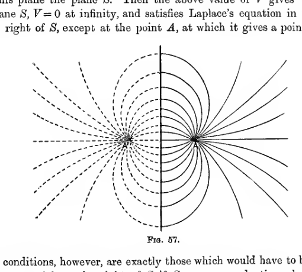
A vertical conducting plane stands between two symmetric point positions marked \(A\) and \(A'\). Solid lines of force fill the region on one side of the plane, while dashed curves mirror them on the other side, showing the image-charge construction for a point charge near an infinite plane.
These conditions, however, are exactly those which would have to be satisfied by the potential on the right of \(S\) if \(S\) were a conducting plane at zero potential under the influence of a charge \(e\) at \(A\). These conditions amount to a knowledge of the value of the potential at every point on the boundary of a certain region, namely, that to the right of the plane \(S\), and of the charges inside this region. There is, as we know, only one value of the potential inside this region which satisfies these conditions (cf. § 186), so that this value must be that given by equation (124).
To the right of \(S\) the potential is the same, whether we have the charge \(-e\) at \(A'\) or the charge on the conducting plane \(S\). To the left of \(S\) in the latter case there is no electric field. Hence the lines of force, when the plane \(S\) is a conductor, are entirely to the right of \(S\), and are the same as in the original field in which the two point-charges were present. The lines end on the plane \(S\), terminating of course on the charge induced on \(S\).
We can find the amount of this induced charge at any part of the plane by Coulomb’s Law. Taking the plane to be the plane of \(yz\), and the point \(A\) to be the point \((a,0,0)\) on the axis of \(x\), we have
where the last line has to be calculated at the point on the plane \(S\) at which we require the density. We must therefore put \(x=0\) after differentiation, and so obtain for the density at the point \(0, y, z\) on the plane \(S\),
or, if \(a^2 + y^2 + z^2 = r^2\), so that \(r\) is the distance of the point on the plane \(S\) from the point \(A\),
Thus the surface-density falls off inversely as the cube of the distance from the point \(A\). The distribution of electricity on the plane is represented graphically in fig. 58, in which the thickness of the shaded part is proportional to the surface-density of electricity. The negative electricity is, so to speak, heaped up near the point \(A\) under the influence of the attraction of the charge at \(A\). The field produced by this distribution of electricity on the plane \(S\) at any point to the right of \(S\) is, as we know, exactly the same as would be produced by the point charge \(-e\) at \(A'\).
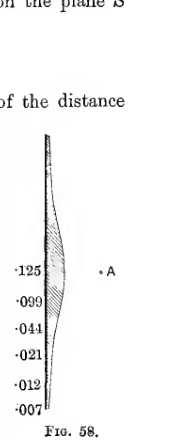
A narrow shaded profile beside the plane thickens strongly near the level of the point charge \(A\) and thins out away from it, indicating how the induced negative surface charge is concentrated nearest the charge and decreases with distance.
209. This problem affords the simplest illustration of a general method for the solution of electrostatic problems, which is known as the “method of images.” The principle underlying this method is that of finding a system of electric charges such that a certain surface, ultimately to be made into a conductor, is caused to coincide with the equipotential \(V=0\). We then replace the charges inside this equipotential by the Green’s equivalent stratum on its surface (cf. § 204). As this surface is an equipotential, we can imagine it to be replaced by a conductor and the charges on it will be in equilibrium. These charges now become charges induced on a conductor at potential zero by charges outside this conductor.
From the analogy with optical images in a mirror, the system of point charges which have to be combined with the original charges to produce zero potential over a conductor are spoken of as the “electrical images” of the original charges. For instance, in the example already discussed, the field is produced partly by the charge at \(A\), partly by the charge induced on the infinite plane: the method of images enables us to replace the whole charge induced on the plane by a single point charge at \(A'\). So also, if \(A\) were a candle placed in front of an infinite plane mirror, the illumination in front of the mirror would be produced partly by the candle at \(A\), partly by the light reflected from the infinite mirror; the method of optical images enables us to replace the whole of this reflected light by the light from a single source at \(A'\).
210. In an electrostatic field produced by any number of point charges, we can, as we have seen, select any equipotential and replace it by a conductor. The charges on either side of this equipotential are then the “images” of those on the other side.
Thus if we can write the equation of any surface in the form
where \(r\) is the distance from a point outside the surface, and \(r', r'', \ldots\) are the distances from points inside the surface, then we may say that charges \(e', e'', \ldots\) at these latter points are the images of a charge \(e\) at the former point.
The method of images may be applied in a similar way to two-dimensional problems. Suppose that the equation of a cylindrical surface can be expressed in the form
where \(r\) is the perpendicular distance from a fixed line on one side of the surface, and \(r', r'', \ldots\) are perpendicular distances from fixed lines on the other side. Then line-charges of line-densities \(e', e'', \ldots\) at these latter lines may be taken to be the image of a line-charge of line-density \(e\) at the former line.
Illustrations of the use of images in three dimensions are given in §§ 211-219. An illustration of the use of a two-dimensional image will be found in § 220.
Charges induced on Intersecting planes.#
211. It will be found that charges
give zero potential over the planes \(x=0\), \(y=0\). The potential of these charges is therefore the same, in the quadrant in which \(x, y\) are both positive, as if the boundary of this quadrant were a conductor put to earth under the influence of a charge \(e\) at the point \(x, y, 0\).
It will be found that a conductor consisting of three planes intersecting at right angles can be treated in the same way.
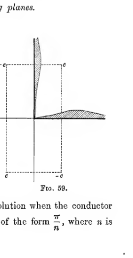
Two mutually perpendicular conducting planes form a grounded corner. A point charge in one quadrant is mirrored into the three other quadrants with alternating signs, and a shaded profile on each plane shows the induced charge concentrated near the corner.
212. The method of images also supplies a solution when the conductor consists of two planes intersecting at any angle of the form \(\frac{\pi}{n}\), where \(n\) is any positive integer. If we take polar coordinates, so that the two planes are \(\theta = 0\), \(\theta = \frac{\pi}{n}\), and suppose the charge to be a charge \(e\) at the point \(r, \theta\), we shall find that charges
give zero potential over the planes
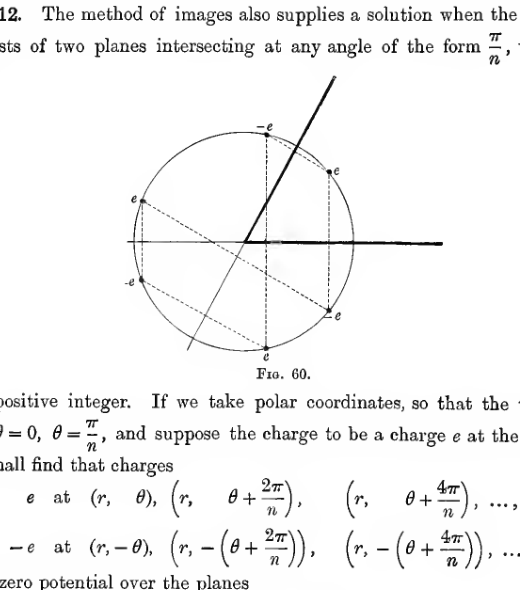
A circular construction diagram shows a wedge bounded by two planes through the origin. Copies of the charge are placed by successive rotations and reflections around the circle, with alternating signs, illustrating the image system for a wedge of angle \(\pi/n\).
Charge induced on a sphere.#
213. The most obvious case, other than the infinite plane, of a surface whose equation can be expressed in the form (125), is a sphere.
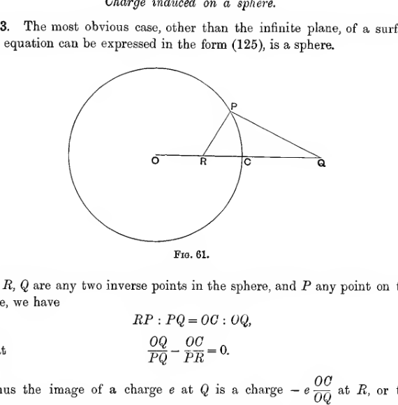
A sphere with centre \(O\) is shown with an external point \(Q\) on the axis through the centre. The inverse point \(R\) lies inside the sphere on the same axis, and a tangent from \(Q\) touches the sphere at \(P\), setting up the inversion geometry used to place the image charge.
If \(R, Q\) are any two inverse points in the sphere, and \(P\) any point on the surface, we have
so that
Thus the image of a charge \(e\) at \(Q\) is a charge \(-e\, \frac{OC}{OQ}\) at \(R\), or the image of any point at a distance \(f\) from the centre of a sphere of radius \(a\) is a charge \(-\frac{ea}{f}\) at the inverse point, i.e. at a point on the same radius distant \(\frac{a^2}{f}\) from the centre.
Let us take polar coordinates, having the centre of the sphere for origin and the line \(OQ\) as \(\theta = 0\). Our result is that at any point \(S\) outside the sphere, the potential due to a charge \(e\) at \(Q\) and the charge induced on the surface of the sphere, supposed put to earth, is
where \(r, \theta\) are the coordinates of \(S\).
214. We can now find the surface-density of the induced charge. For at any point on the sphere
in which we have to put \(r=a\) after differentiation. Clearly
Putting \(r=a\) we obtain
Thus the surface-density varies inversely as \(SQ^3\), so that it is greatest at \(C\) and falls off continually as we recede from the radius \(OC\). The total charge on the sphere is \(-\frac{ea}{f}\), as can be seen at once by considering that the total strength of the tubes of force which end on it is just the same as would be the total strength of the tubes ending on the image at \(R\) if the conductor were not present.
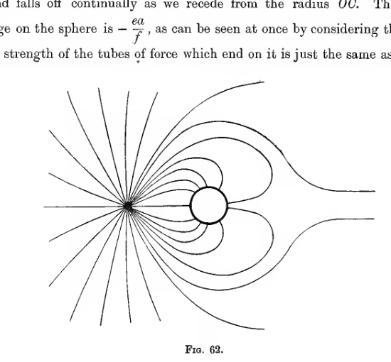
A point charge sits outside a small conducting sphere, and the surrounding field lines bend around the sphere and terminate on its near side. The pattern is asymmetric, with strong crowding between charge and sphere and broader lines farther away.
Figure 62 shews the lines of force when the strength of the image is a quarter of that of the original charge, so that \(f=4a\). It is obtained from fig. 19 by replacing the spherical equipotential by a conductor, and annihilating the field inside.
Superposition of Fields.#
215. We have seen that by adding the potentials of two separate fields at every point, we obtain the potential produced by charges equal to the total charges in the two fields. In this way we can arrive at the field produced by any number of point charges and uninsulated conductors of the kind we have described. The potential of each conductor is zero in the final solution because it is zero for each separate field.
There is also another type of field which may be added to that obtained by the method of images, namely the field produced by raising the conductor or conductors to given potentials, without other charges being present. By superposing a field of this kind we can find the effect of point charges when the conductors are at any potential.
216. For instance, suppose that, as in fig. 62, we have a point charge \(e\) and the conductor at potential \(0\). Let us superpose on to the field of force already found, the field which is obtained by raising the conductor to potential \(V\) when the point charge is absent. The charge on the sphere in the second field is \(aV\), so that the total charge is
By giving different values to \(V\), we can obtain the total field, when the sphere has any given charge or potential.
If the sphere is to be uncharged, we must have \(V = \frac{e}{f}\), so that a point charge placed at a distance \(f\) from the centre of an uncharged sphere raises it to potential \(\frac{e}{f}\), a result which is also obvious from the theorem of § 104.
Sphere in a uniform field of force.#
217. A uniform field of force of which the lines are parallel to the axis of \(x\) may be regarded as due to an infinite charge \(E\) at \(x=R\), and a charge \(-E\) at \(x=-R\), when in the limit \(E\) and \(R\) both become infinite. The intensity at any point is
parallel to the axis of \(x\), so that to produce a uniform field in which the intensity is \(F\) parallel to the axis of \(x\), we must suppose \(E\) and \(R\) to become infinite in such a way that
Since, in this case, \(F = -\frac{\partial V}{\partial x}\), the potential of such a field will clearly be \(-Fx + C\).
Suppose that a sphere is placed in a uniform field of force of this kind, its centre being at the origin. We can suppose the charge \(E\) at \(x=R\) to have an image of strength
at \(x=\frac{a^2}{R}\), while the other charge has an image
at \(x=-\frac{a^2}{R}\).
These two images may be regarded as a doublet (cf. § 64) of strength \(\frac{Ea}{R} \times \frac{2a^2}{R}\), and of direction parallel to the negative axis of \(x\). The strength
Thus we may say that the image of a uniform field of force of strength \(F\) is a doublet of strength \(Fa^3\) and of direction parallel to that of the intensity of the uniform field. The potential of this doublet is
and that of the original field of force is \(-Fx + C\), or, in polar coordinates,
so that the potential of the whole field
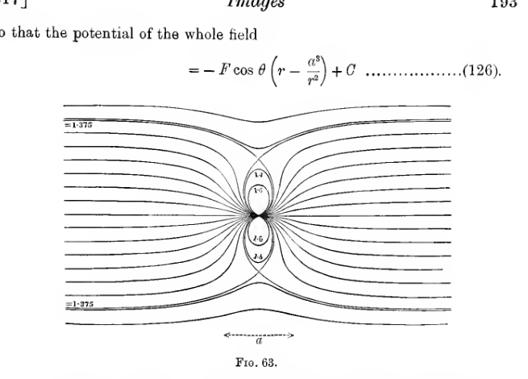
Streamlines of a uniform field are pinched through a small central dipole region. The symmetry about the horizontal axis and the closed central loops show the field of a doublet embedded in an otherwise uniform field.
As it ought, this gives a constant potential \(C\) over the surface of the sphere.
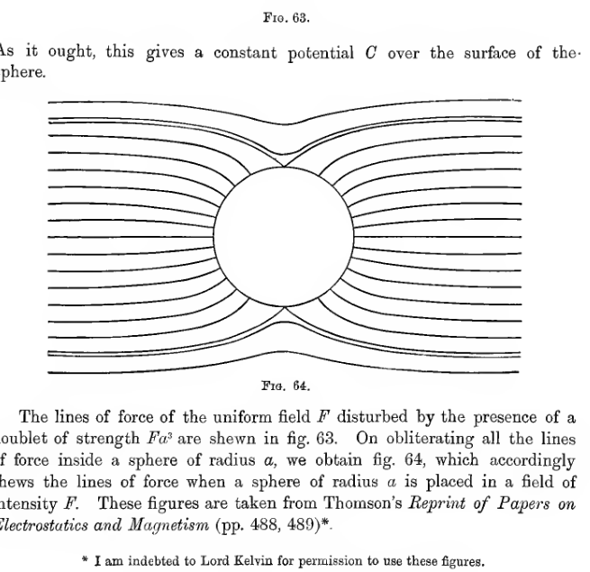
A circular conducting sphere interrupts a uniform field. Field lines remain horizontal far away, but they bow outward above and below the sphere and crowd around its sides, leaving no field inside the circular boundary.
The lines of force of the uniform field \(F\) disturbed by the presence of a doublet of strength \(Fa^3\) are shewn in fig. 63. On obliterating all the lines of force inside a sphere of radius \(a\), we obtain fig. 64, which accordingly shews the lines of force when a sphere of radius \(a\) is placed in a field of intensity \(F\). These figures are taken from Thomson’s Reprint of Papers on Electrostatics and Magnetism (pp. 488, 489).
Line of no electrification.#
218. The theory of lines of no electrification has already been briefly given in § 98. We have seen that on any conductor on which the total charge is zero, and which is not entirely screened from an electric field, there must be some points at which the surface-density \(\sigma\) is positive, and some points at which it is negative. The regions in which \(\sigma\) is positive and those in which \(\sigma\) is negative must be separated by a line or system of lines on the conductor, at every point of which \(\sigma = 0\). These lines are known as lines of no electrification.
If \(R\) is the resultant intensity, we have at any point on a line of no electrification,
so that every point of a line of no electrification is a point of equilibrium. At such a point the equipotential intersects itself, and there are two or more lines of force.
If the conductor possesses a single tangent plane at a point on a line of no electrification, then one sheet of the equipotential through this point will be the conductor itself; by the theorem of § 69, the second sheet must intersect the conductor at right angles.
These results are illustrated in the field of fig. 64. Clearly the line of no electrification on the sphere is the great circle in a plane perpendicular to the direction of the field. The equipotential which intersects itself along the line of no electrification (\(V=C\)) consists of the sphere itself and the plane containing the line of no electrification. Indeed, from formula (126), it is obvious that the potential is equal to \(C\), either when \(\theta = \frac{\pi}{2}\), or when \(r=a\).
The intersection of the lines of force along the line of no electrification is shown clearly in fig. 64.
Plane face with hemispherical boss.#
219. If we regard the whole equipotential \(V=C\) as a conductor, we obtain the distribution of electricity on a plane conductor on which there is a hemispherical boss of radius \(a\). If we take the plane to be \(x=0\), we have, by formula (126),
At a point on the plane,
and on the hemisphere
The whole charge on the hemisphere is found on integration to be
while, if the hemisphere were not present, the charge on the part of the plane now covered by the base of the hemisphere would be
Thus the presence of the boss results in there being three times as much electricity on this part of the plane as there would otherwise be: this is compensated by the diminution of surface-density on those parts of the plane which immediately surround the boss.
Capacity of a telegraph-wire.#
220. An important practical application of the method of images is the determination of the capacity of a long straight wire placed parallel to an infinite plane at potential zero, at a distance \(h\) from the plane. This may be supposed to represent a telegraph-wire at height \(h\) above the surface of the earth.
Let us suppose that the wire has a charge \(e\) per unit length. To find the field of force we imagine an image charged with a charge \(-e\) per unit length at a distance \(h\) below the earth’s surface. The potential at a point at distances \(r, r'\) from the wire and image respectively is, by §§ 75 and 100,
and for this to vanish at the earth’s surface we must take \(C=0\). Thus the potential is
At a small distance \(a\) from the line-charge which represents the telegraph-wire, we may put \(r' = 2h\), so that the potential is
from which it appears that a cylinder of small radius \(a\) surrounding the wire is an equipotential. We may now suppose the wire to have a finite radius \(a\), and to coincide with this equipotential. Thus the capacity of the wire per unit length is
Infinite series of Images.#
221. Suppose we have two spheres, centres \(A, B\) and radii \(a, b\), of which the centres are at distance \(c\) apart, and that we require to find the field when both are charged. We can obtain this field by superposing an infinite series of separate fields (cf. § 116).
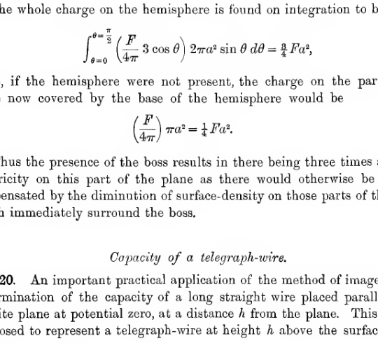
Two separated spheres lie on a common axis. Each sphere contains an interior image point on the line of centres, showing the alternating sequence of image charges generated when two conducting spheres influence one another.
Suppose first that \(A\) is at potential \(V\) while \(B\) is at potential zero. As a first field we can take that of a charge \(Va\) at \(A\). This gives a uniform potential \(V\) over \(A\), but does not give zero potential over \(B\). We can reduce the potential over \(B\) to zero by superposing a second field arising from the image of the original charge in sphere \(B\), namely a charge \(-\frac{Vab}{c}\) at \(B'\), where \(BB' = \frac{b^2}{c}\).
This new field has, however, disturbed the potential over \(A\). To reduce this to its original value we superpose a new field arising from the image of the charge at \(B'\) in \(A\), namely a charge \(\frac{Vab}{c} \cdot \frac{a}{c-\frac{b^2}{c}}\) at \(A'\), where \(AA' = \frac{a^2}{c-\frac{b^2}{c}}\). This field in turn disturbs the potential over \(B\), and so we superpose another field, and so on indefinitely. The strengths of the various fields, however, continually diminish, so that although we get an infinite series to express the potential, this series is convergent. As we shall see, this series can be summed as a definite integral, or it may be that a good approximation will be obtained by taking only a finite number of terms.
The total charge on \(A\) is clearly the sum of the original charge \(Va\) plus the strengths of the images \(A', A'', \ldots\), etc., for this sum measures the aggregate strength of the tubes of force which end on \(A\). Similarly the charge on \(B\) is the sum of the strengths of the images at \(B', B'', \ldots\).
To obtain the field corresponding to given potentials of both \(A\) and \(B\) we superpose on to the field already found, the similar field obtained by raising \(B\) to the required potential while that of \(A\) remains zero.
222. The series for \(q_{11}, q_{12}, q_{22}\) have been put in a more manageable form by Poisson and Kirchhoff.
Let \(A_s\) denote the position of the \(s\)th of the series of points \(A', A'', \ldots\), and \(B_s\) the \(s\)th of the series \(B', B'', \ldots\); then \(A_s\) is the image of \(B_s\) in the sphere of radius \(a\), and similarly \(B_s\) is the image of \(A_{s-1}\) in the sphere of radius \(b\). Let \(a_s = AA_s\), \(b_s = BB_s\), and let the charges at \(A_s, B_s\) be \(e_s, e'_s\) respectively.
Then
Further, by comparing the strengths of a charge and its image,
so that
and similarly
We have therefore
and
By addition we eliminate \(a_s\), and obtain
or, if we put \(\frac{1}{e_s} = u_s\),
and from symmetry it is obvious that the same difference equation must be satisfied by a quantity \(u'_s = \frac{1}{e'_s}\).
The solution of the difference equation (128) may be taken to be
where \(\alpha, \beta\) are the roots of
The product of these roots is unity, so that if \(\alpha\) is the root which is less than unity, we can suppose
so that
and similarly
We now have
To determine \(A, B\), we have
so that
where
Thus
and
To determine \(A', B'\), we have
from which, in the same way,
This series cannot be summed algebraically, but has been expressed as a definite integral by Poisson. From the known formula
we obtain at once
so that on putting \(p = \log \xi^2\alpha^{2s}\) we have
Both the series on the right can be summed. We have
so that
and on replacing \(\xi\) by unity, we obtain
These are the series which occur in \(q_{11}\) and \(q_{12}\).
223. Having calculated the coefficients, either by this or some other method, we can at once obtain the relations between the charges and potentials, and can find also the mechanical force between the spheres. If this force is a force of repulsion \(F\), we have
or again
The following table, applicable to two spheres of equal radius, taken to be unity, is compiled from materials given by Lord Kelvin.
\(c\) |
\(p_{11}(=p_{22})\) |
\(p_{12}\) |
\(q_{11}(=q_{22})\) |
\(q_{12}\) |
\(\frac{1}{2}\frac{\partial p_{11}}{\partial c}(=\frac{1}{2}\frac{\partial p_{22}}{\partial c})\) |
\(\frac{\partial p_{12}}{\partial c}\) |
\(\frac{1}{2}\frac{\partial q_{11}}{\partial c}\) |
\(\frac{\partial q_{12}}{\partial c}\) |
Ratio of charges for equilibrium |
|---|---|---|---|---|---|---|---|---|---|
2.0 |
.722 |
.722 |
\(\infty\) |
\(-\infty\) |
\(\infty\) |
\(\infty\) |
\(\infty\) |
\(\infty\) |
1 |
2.1 |
.915 |
.509 |
1.584 |
-.882 |
.154 |
.453 |
1.138 |
2.349 |
.391 |
2.2 |
.939 |
.475 |
1.431 |
-.724 |
.083 |
.305 |
.529 |
1.127 |
.294 |
2.5 |
.969 |
.406 |
1.253 |
-.525 |
.0300 |
.181 |
.174 |
.412 |
.169 |
3.0 |
.986 |
.335 |
1.146 |
-.389 |
.0122 |
.115 |
.066 |
.186 |
.089 |
3.5 |
.993 |
.286 |
1.099 |
-.317 |
.00437 |
.0825 |
.0344 |
.114 |
.053 |
4.0 |
.996 |
.250 |
1.072 |
-.269 |
.00216 |
.0628 |
.0207 |
.079 |
.034 |
5.0 |
.998 |
.200 |
1.044 |
-.209 |
.00065 |
.0401 |
.0096 |
.048 |
.016 |
6.0 |
.999 |
.167 |
1.030 |
-.172 |
.00026 |
.0278 |
.0053 |
.031 |
.009 |
\(\infty\) |
1.0 |
0 |
1.0 |
0 |
0 |
0 |
0 |
0 |
0 |
Images in dielectrics.#
224. The method of images can also be applied to find the field produced by point charges when half of the field is occupied by dielectric, the boundary of the dielectric being an infinite plane.
We begin by considering the field produced by a single charge \(e\) at \(P\), it being possible to obtain the most general field by the superposition of simple fields of this kind.
We shall shew that the field in air is the same as that due to a charge \(e\) at \(P\) and a certain charge \(e'\) at \(P'\), the image of \(P\), while the field in the dielectric is the same as that due to a certain charge \(e''\) at \(P\), if the whole field were occupied by air.
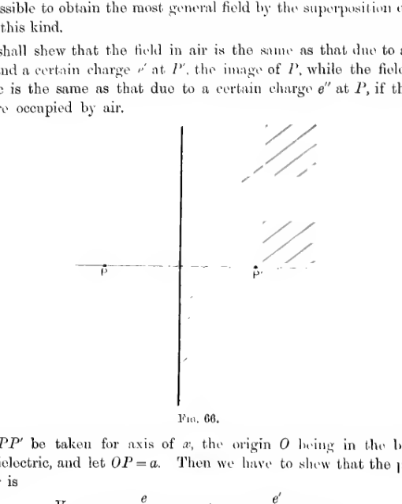
A vertical boundary plane separates air on one side from a shaded dielectric on the other. A point charge \(P\) lies in the air, its mirror point \(P'\) lies across the boundary, and the construction marks the image arrangement used to match the boundary conditions.
Let \(PP'\) be taken for axis of \(x\), the origin \(O\) being in the boundary of the dielectric, and let \(OP = a\). Then we have to shew that the potential \(V_A\) in air is
while that in the dielectric is
These potentials, we notice, satisfy Laplace’s equation in each medium, everywhere except at the point \(P\), and they arise from a distribution of charges which consists of a single point charge \(e\) at \(P\). The potential in air at the point \(0, y, z\) on the boundary is
while that in the dielectric at the same point is
Thus the condition that the potential shall be continuous at each point of the boundary can be satisfied by taking
The remaining condition to be satisfied is that at every point of the boundary, \(\frac{\partial V}{\partial x}\) in air shall be equal to \(K\frac{\partial V}{\partial x}\) in the dielectric; i.e. that
Now, when \(x=0\),
so that this last condition is satisfied by taking
Thus the conditions of the problem are completely satisfied by giving \(e', e''\) values such as will satisfy relations (129) and (130); i.e. by taking
225. The pull on the dielectric is that due to the tensions of the lines of force which cross its boundary. In air these lines of force are the same as if we had charges \(e, e'\) at \(P, P'\) entirely in air, so that the whole tension in the direction \(P'P\) of the lines of force in air is
or
This system of tensions shews itself as an attraction between the dielectric and the point charge. If the dielectric is free to move and the point charge fixed, the dielectric will be drawn towards the point charge by this force, and conversely if the dielectric is fixed the point charge will be attracted towards the dielectric by this force.
Inversion#
226. The geometrical method of inversion may sometimes be used to deduce the solution of one problem from that of another problem of which the solution is already known.
Geometrical Theory.#
227. Let \(O\) be any point which we shall call the centre of inversion, and let \(AB\) be a sphere drawn about \(O\) with a radius \(K\) which we shall call the radius of inversion.
Corresponding to any point \(P\) we can find a second point \(P'\), the inverse to \(P\) in the sphere. These two points are on the same radius at distances from \(O\) such that \(OP . OP' = K^2\).
As \(P\) describes any surface \(PQ\ldots\), \(P'\) will describe some other surface \(P'Q'\ldots\), each point \(Q'\) on the second surface being the inverse of some point \(Q\) on the original surface. This second surface is said to be the inverse of the original surface, and the process of deducing the second surface from the first is described as inverting the first surface.
It is clear that if \(P'Q'\ldots\) is the inverse of \(PQ\ldots\), then the inverse of \(P'Q'\ldots\) will be \(PQ\ldots\).
If the polar equation of a surface referred to the centre of inversion as origin be \(f(r, \theta, \phi)=0\), then the equation of its inverse will be \(f\left(\frac{K^2}{r}, \theta, \phi\right)=0\). For the polar equation of the inverse surface is by definition \(f(r', \theta, \phi)=0\), where \(rr' = K^2\) for all values of \(\theta\) and \(\phi\).
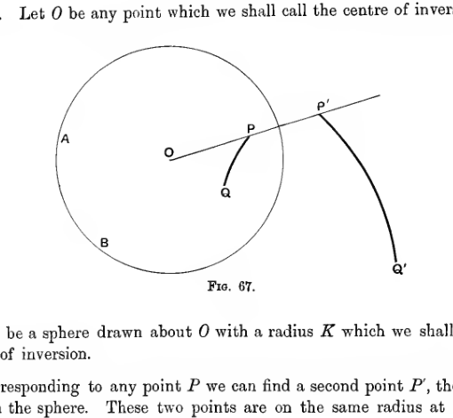
A circle centered at \(O\) represents the sphere of inversion. A ray through \(O\) meets the circle at \(P\) and continues outward to the inverse point \(P'\), while a curved arc through \(P\) maps to a second outward curve ending at \(Q'\), illustrating how points on one surface invert to a second surface along the same radii.
Inverse of a sphere. Let chords \(PP', QQ', \ldots\) of a sphere meet in \(O\) (fig. 68). Then
where \(t\) is the length of the tangent from \(O\) to the sphere. Thus, if \(t\) is the radius of inversion, the surface \(PQ\ldots\) is the inverse of \(P'Q'\ldots\), i.e. the sphere is its own inverse. With some other radius of inversion \(K\), let \(P''Q''\ldots\) be the inverse of \(PQ\ldots\), then
so that
and the locus of \(P'', Q'', \ldots\) is seen to be a sphere. Thus the inverse of a sphere is always another sphere.
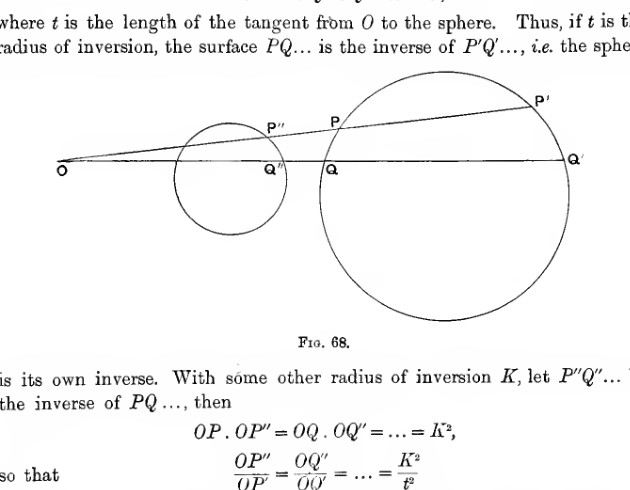
Two circles lie on rays issuing from the common point \(O\). The larger and smaller spheres are cut by the same two rays, with corresponding points \(P, Q\) and \(P', Q'\) marked to show that inversion sends one sphere to another sphere along fixed directions from the centre of inversion.
A special investigation is needed when sphere passes through \(O\). Let \(OS\) be the diameter through \(O\), and let \(S'\) be the point inverse to \(S\). Then, if \(P'\) is the inverse of any point \(P\) on the circle,
or
so that \(POS, S'OP'\) are similar triangles. Since \(OPS\) is a right angle, it follows that \(OS'P'\) is a right angle, so that the locus of \(P'\) is a plane through \(S'\) perpendicular to \(OS'\). Thus the inverse of a sphere which passes through the centre of inversion is a plane, and, conversely, the inverse of any plane is a sphere which passes through the centre of inversion.
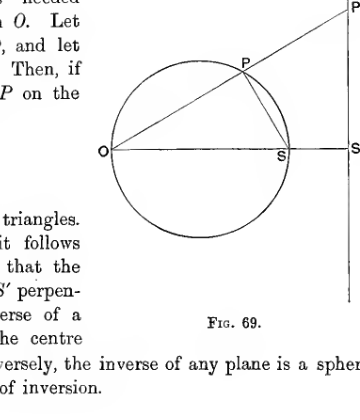
A circle passes through the inversion centre \(O\) and meets the horizontal diameter at \(S\). The inverse point \(S'\) lies to the right on the same axis, and the image point \(P'\) lies on a vertical line through \(S'\), showing that a sphere through the centre inverts into a plane.
228. If \(P, Q\) are adjacent points on a surface, and \(P', Q'\) are the corresponding points on its inverse, then \(OPQ, OQ'P'\) are similar triangles, so that \(PQ, P'Q'\) make equal angles with \(OPP'\). By making \(PQ\) coincide, we find that the tangent plane at \(P\) to the surface \(PQ\) and the tangent plane at \(P'\) to the surface \(P'Q'\) make equal angles with \(OPP'\). Hence, if we invert two surfaces which intersect in \(P\), we find that the angle between the two inverse surfaces at \(P'\) is equal to the angle between the original surfaces at \(P\), i.e. an angle of intersection is not altered by inversion.
Also, if a small cone through \(O\) cuts off areas \(dS, dS'\) from the surface \(PQ\ldots\) and its inverse \(P'Q'\ldots\), it follows that
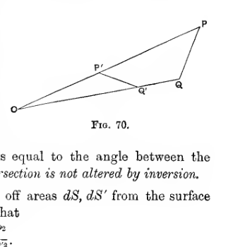
Two nearby points \(P, Q\) on one curve and their inverse points \(P', Q'\) on another are joined to the common centre \(O\). The narrow quadrilateral-like layout highlights the similar triangles used to show that inversion preserves the angle of intersection between surfaces.
Electrical Applications.#
229. Let \(PP', QQ'\) be two pairs of inverse points (fig. 70). Let a charge \(e\) at \(Q\) produce potential \(V_P\) at \(P\), and let a charge \(e'\) at \(Q'\) produce potential \(V'_{P'}\) at \(P'\), so that
then
Take
then
Now let \(Q\) be a point of a conducting surface, and replace \(e\) by \(\sigma\, dS\), the charge on the element of surface \(dS\) at \(Q\). Let \(\overline{V}_P\) denote the potential of the whole surface at \(P\), and let \(\overline{V}'_{P'}\) denote the potential at \(P'\) due to a charge \(e'\) on each element \(dS'\) of the inverse surface, such that
Then, since \(V'_{P'} = V_P\, \frac{K}{OP'}\) for each element of charge, we have by addition
Thus charges \(e'\) on \(dS'\), etc. produce a potential
at \(P'\).
Now suppose that \(P\) is a point on the conducting surface, so that \(\overline{V}_P\) becomes simply the potential of this surface, say \(V\). The charges \(e'\) on \(dS'\), etc. now produce a potential
at \(P'\), so that if with these charges we combine a charge \(-VK\) at \(O\), the potential produced at \(P'\) is zero. Thus the given system of charges spread over the surface \(P'Q'\ldots\), together with a charge \(-VK\) at the origin, make the surface \(PQ\ldots\) an equipotential of potential zero. In other words, from a knowledge of the distribution which raises \(PQ\ldots\) to potential \(V\), we can find the distribution on the inverse surface \(P'Q'\ldots\) when it is put to earth under the influence of a charge \(-VK\) at the centre of inversion.
If \(e, e'\) are the charges on corresponding elements \(dS, dS'\) at \(Q, Q'\), we have seen that
while
Hence
giving the ratio of the surface densities on the two conductors.
Conversely, if we know the distribution induced on a conductor \(PQ\ldots\) at potential zero by a unit charge at a point \(O\), then by inversion about \(O\) we obtain the distribution on the inverse conductor \(P'Q'\ldots\) when raised to potential \(\frac{1}{K}\). As before, the ratio of the densities is given by equation (132).
Examples of Inversion.#
230. Sphere. The simplest electrical problem of which we know the solution is that of a sphere raised to a given potential. Let us examine what this solution becomes on inversion.
If we invert with respect to a point \(P\) outside the sphere, we obtain the distribution on another sphere when put to earth under the influence of a point charge \(P\). This distribution has already been obtained in § 214 by the method of images. The result there obtained, that the surface-density varies inversely as the cube of the distance from \(P\), can now be seen at once from equation (132).
So also, if \(P\) is inside the sphere, we obtain the distribution on an uninsulated sphere produced by a point charge inside it, a result which can again be obtained by the method of images.
When \(P\) is on the sphere, we obtain the distribution on an uninsulated plane, already obtained in § 208.
231. Intersecting Planes. As a more complicated example of inversion, let us invert the results obtained in § 212. We there shewed how to find the distribution on two planes cutting at an angle \(\frac{\pi}{n}\), when put to earth under the influence of a point charge anywhere in the acute angle between them. If we invert the solution we obtain the distribution on two spheres, cutting at an angle \(\pi/n\), raised to a given potential. By a suitable choice of the radius and origin of inversion, we can give any radii we like to the two spheres.
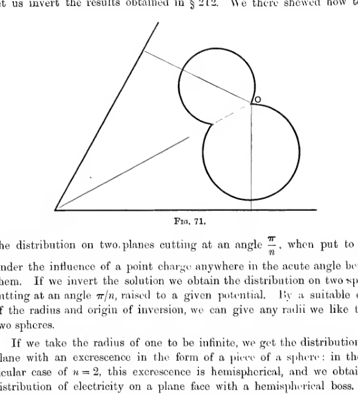
Two grounded planes forming a wedge invert into two touching circular arcs. One transformed boundary remains finite while the other can be taken to infinity, yielding the hemispherical-boss geometry discussed in the text.
If we take the radius of one to be infinite, we get the distribution on a plane with an excrescence in the form of a piece of a sphere: in the particular case of \(n=2\), this excrescence is hemispherical, and we obtain the distribution of electricity on a plane face with a hemispherical boss. This can, however, be obtained more directly by the method of § 219.
Spherical Harmonics#
232. The problem of finding the solution of any electrostatic problem is equivalent to that of finding a solution of Laplace’s equation
throughout the space not occupied by conductors, such as shall satisfy certain conditions at the boundaries of this space, i.e. at infinity and on the surfaces of conductors. The theory of spherical harmonics attempts to provide a general solution of the equation \(\nabla^2 V = 0\).
There is no convenient general solution in finite terms: we therefore examine solutions expressed as an infinite series. If each term of such a series is a solution of the equation, the sum of the series is necessarily a solution.
233. Let us take spherical polar coordinates \(r, \theta, \phi\), and search for solutions of the form
where \(R\) is a function of \(r\) only, and \(S\) is a function of \(\theta\) and \(\phi\) only.
Laplace’s equation, expressed in spherical polars, can be obtained analytically from the equation
by changing variables from \(x, y, z\) to \(r, \theta, \phi\), but it is most easily obtained by applying Gauss’ Theorem to the small element of volume bounded by the spheres \(r\) and \(r+dr\), the cones \(\theta\) and \(\theta + d\theta\), and the diametral planes \(\phi\) and \(\phi + d\phi\). The equation is found to be
Substituting the value \(V=RS\), we obtain
or, simplifying,
The first term is a function of \(r\) only, while the last two terms are independent of \(r\). Thus the equation can only be satisfied by taking
and
where \(K\) is a constant. Equation (133), regarded as a differential equation for \(R\), can be solved, the solution being
where \(A, B\) are arbitrary constants, and \(n(n+1)=K\). After simplification equation (134) becomes
Any solution of this equation will be denoted by \(S_n\), the solution being a function of \(n\) as well as of \(\theta\) and \(\phi\). The solution of Laplace’s equation we have obtained is now
and by the addition of such solutions, the most general solution of Laplace’s equation may be reached.
234. Definitions. Any solution of Laplace’s equation is said to be a spherical harmonic.
A solution which is homogeneous in \(x, y, z\) of dimensions \(n\) is said to be a spherical harmonic of degree \(n\).
A spherical harmonic of degree \(n\) must be of the form \(r^n\) multiplied by a function of \(\theta\) and \(\phi\), it must therefore be of the form \(Ar^n S_n\), where \(S_n\) is a solution of equation (136).
Any solution \(S_n\) of equation (136) is said to be a surface-harmonic of degree \(n\).
235. Theorem. If \(V\) is any spherical harmonic of degree \(n\), then \(V/r^{2n+1}\) is a spherical harmonic of degree \(-(n+1)\).
For \(V\) must be of the form \(Ar^nS_n\), so that
which is known to be a solution of Laplace’s equation, and is of dimensions \(-(n+1)\) in \(r\). Conversely if \(V\) is a spherical harmonic of degree \(-(n+1)\), then \(r^{2n+1}V\) is a spherical harmonic of degree \(n\).
236. Theorem. If \(V\) is any spherical harmonic of degree \(n\), then
where \(s, t\), and \(u\) are any integers, is a spherical harmonic of degree \(n-s-t-u\).
For
so that on differentiation \(s\) times with respect to \(x\), \(t\) times with respect to \(y\), and \(u\) times with respect to \(z\),
or
which proves the theorem.
237. Theorem. If \(S_m, S_n\) are two surface harmonics of different degrees \(m, n\), then
where the integration is over the surface of a unit sphere.
In Green’s Theorem (§ 181),
put \(\Phi = r^nS_n, \Psi = r^mS_m\), and take the surface to be the unit sphere. Then \(\nabla^2\Phi = 0\), \(\nabla^2\Psi = 0\), \(\partial \Phi/\partial n = \partial \Phi/\partial r = nr^{n-1}S_n\), and \(\partial \Psi/\partial n = -mr^{m-1}S_m\). Thus the volume integral vanishes, and the equation becomes
or, since \(n\) is, by hypothesis, not equal to \(m\),
Harmonics of Integral Degree#
238. The following table of examples of harmonics of integral degrees \(n=0, -1, -2, +1\), is taken from Thomson and Tait’s Natural Philosophy.
Also if \(V_0\) is any one of these harmonics, \(\partial V_0/\partial x\), \(\partial V_0/\partial y\), \(\partial V_0/\partial z\) are harmonics of degree \(-1\), so that \(r\,\partial V_0/\partial x\), \(r\,\partial V_0/\partial y\), \(r\,\partial V_0/\partial z\) are harmonics of degree zero. As examples of harmonics derived in this way may be given
By differentiating any harmonic \(V_0\) any number \(s\) of times, multiplying by \(r^{2s-1}\) and differentiating again \(s-1\) times, we obtain more harmonics of degree zero.
Rational Integral Harmonics#
239. An important class of harmonic consists of rational integral algebraic functions of \(x, y, z\). In the most general homogeneous function of \(x, y, z\) of degree \(n\) there are \(\tfrac{1}{2}(n+1)(n+2)\) coefficients. If we operate with \(\nabla^2\) we are left with a homogeneous function of \(x, y, z\) of degree \(n-2\), and therefore possessing \(\tfrac{1}{2}n(n-1)\) coefficients. For the original function to be a spherical harmonic, these \(\tfrac{1}{2}n(n-1)\) coefficients must all vanish, so that we must have \(\tfrac{1}{2}n(n-1)\) relations between the original \(\tfrac{1}{2}(n+1)(n+2)\) coefficients.
Thus the number of coefficients which may be regarded as independent in the original function, subject to the condition of its being a harmonic, is
or \(2n+1\). This, then, is the number of independent rational harmonics of degree \(n\).
For instance, when \(n=1\) the most general harmonic is
possessing three independent arbitrary constants, and so representing three independent harmonics which may conveniently be taken to be \(x, y\) and \(z\).
When \(n=2\), the most general harmonic is
where \(a, b, c\) are subject to \(a+b+c=0\). The five independent harmonics may conveniently be taken to be
When \(n=0\), \(2n+1=1\). Thus there is only one harmonic of degree zero, and this may be taken to be \(V=1\).
Corresponding to a rational integral harmonic \(V_n\) of positive degree \(n\), there is the harmonic
of degree \(-(n+1)\). These harmonics of degree \(-(n+1)\) are accordingly \(2n+1\) in number. Thus the only harmonic of this kind and of degree \(-1\) is \(1/r\).
Consider now the various expressions of the type
where \(s+t+u=n\).
These, as we know, are harmonics of degree \(-(n+1)\), and from § 235 it is obvious that they must be of the form \(V_n/r^{2n+1}\), where \(V_n\) is a rational integral harmonic of degree \(n\). Since \(1/r\) is harmonic, \(\nabla^2(1/r)=0\), so that
The most general harmonic obtained by combining the harmonics of type (137) is
but by equation (138) this can be reduced at once to the form
where \(p+q=n-1\) and \(p'+q'=n\). This again may be replaced by
so that there are \(2n+1\) arbitrary constants in all, and it is obvious on examination that the harmonics, multiplied by all the coefficients \(B_p, B'_p\), are independent. Thus by differentiating \(1/r\) \(n\) times, we have arrived at \(2n+1\) independent rational harmonics, and it is known that this is as many as there are.
Expansion in Rational Integral Harmonics#
240. Theorem.* The value of any finite single-valued function of position on a spherical surface can be expressed, at every point of the surface at which the function is continuous, as a series of rational integral harmonics, provided the function has only a finite number of lines and points of discontinuity and of maxima and minima on the surface.
Let \(F\) be the arbitrary function of position on the sphere, and let the sphere be supposed of radius \(a\). Let \(P\) be any point outside the sphere at a distance \(f\) from its centre \(O\), and let \(Q\) be any point on the surface of the sphere.
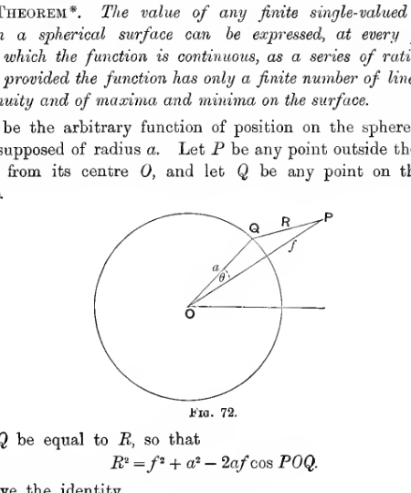
A sphere of radius \(a\) is centered at \(O\), with an external point \(P\) and a point \(Q\) on the spherical surface. The segment \(PQ\) is marked \(R\), and the angle at the centre between the radius to \(Q\) and the line toward \(P\) is labelled \(\theta\), setting up the geometry for the harmonic expansion theorem.
Let \(PQ\) be equal to \(R\), so that
We have the identity
where the integration is taken over the surface of the sphere, a result which it is easy to prove by integration.
A point charge \(e\) placed at \(P\) induces surface density \(-\frac{e}{4\pi a}\frac{f^2-a^2}{R^3}\) on the surface of the sphere (§ 214), and the total induced charge is therefore \(-\frac{ea}{f}\). The identity is therefore obvious from electrostatic principles.
Now introduce a quantity \(u\) defined by
so that \(u\) is a function of the position of \(P\). If \(P\) is very close to the sphere, \(f^2-a^2\) is small, and the important contributions to the integral arise from those terms for which \(R\) is very small, i.e. from elements near to \(P\).
If the value of \(F\) does not change abruptly near to the point \(P\), or oscillate with infinite frequency, we can suppose that as \(P\) approaches the sphere, all elements on the sphere from which the contribution to the integral (141) are of importance, have the same \(F\). This value of \(F\) will of course be the value at the point at which \(P\) ultimately touches the sphere, say \(F_P\). Thus in the limit we have
when in the limit \(f\) becomes equal to \(a\).
If the value of \(F\) oscillates with infinite frequency near to the point \(P\), we obviously may not take \(F\) outside the sign of integration in passing from equation (141) to equation (142).
If the value of \(F\) is discontinuous at the point \(P'\) of the sphere with which \(P\) ultimately coincides, we again cannot take \(F\) outside the sign of integration. Suppose, however, that we take coordinates \(\rho, \vartheta\) to express the position of a point \(P''\) on the surface of the sphere very near to \(P'\), the coordinate \(\rho\) being the distance \(P'P''\), and \(\vartheta\) being the angle which \(P'P''\) makes with any line through \(P'\) in the tangent plane at \(P'\). Then \(F'\) may be regarded as a function of \(\rho, \vartheta\), and the fact that \(F'\) is discontinuous at \(P\) is expressed by saying that as we approach the limit \(\rho=0\), the limiting value of \(F'\) (assuming such a limit to exist) is a function of \(\vartheta\), i.e. depends on the path by which \(P'\) is approached. Let \(F'(\vartheta)\) denote this limit. Then
On passing to the limit and putting \(a=f\), we find that
i.e. \(u\) is the average value of \(F'\) taken on a small circle of infinitesimal radius surrounding \(P'\). In particular, if \(F'\) changes abruptly on crossing a certain line through \(P'\), having a value \(F_1\) on one side, and a value \(F_2\) on the other, then the limiting value of \(u\) is
If we take \(\theta\) to denote the angle \(POQ\),
or, arranging in descending powers of \(f\),
in which \(P_1, P_2, P_3, \ldots\) are functions of \(\theta\), being obviously rational integral functions of \(\cos \theta\). When \(\theta=0\),
and when \(\theta=\pi\),
so that when \(\theta=0\), \(P_1=P_2=\cdots=1\), and when \(\theta=\pi\), \(-P_1=P_2=-P_3=\cdots=1\).
It is clear, therefore, that the series (144) is convergent for \(\theta=0\) and \(\theta=\pi\), and a consideration of the geometrical interpretation of this series will shew that it must be convergent for all intermediate values.*
Differentiating equation (144) with respect to \(f\), we get
If we multiply this equation by \(2f\), and add corresponding sides to equation (144), we obtain
Multiplying this equation by \(-\frac{F}{4\pi a}\), and integrating over the surface of the sphere, we obtain, or, by equation (141),
If the function \(F\) is continuous and non-oscillatory at the point \(P\), then on passing to the limit and putting \(f=a\), we obtain
If \(F\) is discontinuous and non-oscillatory, then the value of the series on the right is not \(F\), but is the function defined in equation (143).
Now it is known that \(1/R\) is a spherical harmonic, so that we have
where the differentiation is with respect to the coordinates of \(Q\). Hence \(1/R\) must be of the form (cf. § 233)
where \(S_n\) is a surface harmonic of order \(n\). Comparing with equation (144), and remembering that \(a\) in this equation is the same as the \(r\) of equation (147), we see that \(P_n\), regarded as a function of the position of \(Q\), is a surface harmonic of order \(n\), and we have already seen that it is a series of powers of \(\cos \theta\), or of \(x/r\), the highest power being the \(n\)th, so that \(r^nP_n\) is a rational integral harmonic of order \(n\). It follows that
being the sum of a number of terms each of the form \(r^nP_n\), is also a rational integral harmonic of order \(n\), say \(V_n\). On the surface of the sphere
so that equation (146) becomes
which establishes the result in question.
The proof of this theorem is stated in the form which seems best suited to the requirements of the student of electricity and makes no pretence at absolute mathematical rigour.
241. Theorem. The expansion of an arbitrary function of position on the surface of a sphere as a series of rational integral harmonics is unique.
For if possible let the same function \(F\) be expanded in two ways, say
where \(W_n, W'_n\) are rational integral harmonics of order \(n\). Then the function
is a spherical harmonic, which vanishes at every point of the sphere. Since \(\nabla^2u=0\) at every point inside the sphere it is impossible for \(u\) to have either a maximum or a minimum value inside the sphere (cf. § 52), so that \(u=0\) at every point inside the sphere. Since \(W_n-W'_n\) is a harmonic of order \(n\), it must be of the form \(r^nS_n\), where \(S_n\) is a surface harmonic, so that
Thus \(u\) is a power series in \(r\) which vanishes for all values of \(r\) from \(r=0\) to \(r=a\). Thus \(S_n=0\) for all values of \(n\). Hence \(W_n=W'_n\), and the two expansions (149) and (150) are seen to be identical.
242. It is clear that in electrostatics we shall in general only be concerned with functions which are finite and single-valued at every point, and of which the discontinuities are finite in number. Thus the only classes of harmonics which are of importance are rational integral harmonics, and in future we confine our attention to these.
The rational integral harmonics of degree \(n\) are \((2n+1)\) in number, and may all be derived from the harmonic \(1/r\) by differentiation.
Any function of position on a spherical surface, which satisfies the conditions which obtain in a physical problem, can be expanded as a series of rational integral harmonics, and this can be done only in one way.
243. Before considering these harmonics in detail, we may try to form some idea of the physical conceptions which lead to them most directly.
The function \(1/r\) is the potential of a unit charge at the origin. If, as in § 64, we consider two charges \(\pm e\) at points \(O', O''\) at equal small distances \(a, -a\) from the origin along the axis of \(x\), we obtain as the potential at \(P\),
If we take \(-e\cdot PP''=1\), we have a doublet of strength \(-1\) parallel to the axis of \(x\), and the potential at \(P\) is \(\partial(1/r)/\partial x\). In fact this potential is exactly the same as \(-x/r^3\) already found in § 64.
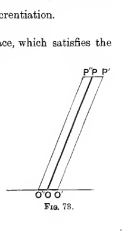
Two close parallel displaced line segments rise from neighbouring points \(O'\) and \(O''\) on a baseline to corresponding upper points \(P''\) and \(P'\). The sketch visualizes the small displacement construction used to turn a pair of opposite charges into a derivative of \(1/r\).
Thus the three harmonics of order \(-1\) obtained by dividing the rational integral harmonics of order \(1\) by \(r^3\), namely \(\partial(1/r)/\partial x\), \(\partial(1/r)/\partial y\), \(\partial(1/r)/\partial z\), are simply the potentials of three doublets each of unit strength, parallel to the negative axes of \(x, y, z\) respectively.
If in fig. 73 we replace the charge \(e\) at \(O'\) by a doublet of strength \(e\) parallel to the negative axis of \(x\), and the charge \(-e\) at \(O''\) by a doublet of strength \(-e\) parallel to the negative axis of \(x\), we obtain a potential
If instead of the doublets being parallel to the axis of \(x\), we take them parallel to the axis of \(y\), we obtain a potential
So we can go on indefinitely, for on differentiating the potential of a system with respect to \(x\) we get the potential of a system obtained by replacing each unit charge of the original system by a doublet of unit strength parallel to the axis of \(x\). Thus all harmonics of type
(cf. § 236) can be regarded as potentials of systems of doublets at the origin, and, as we have seen (§ 239), it is these potentials which give rise to the rational integral harmonics.
244. For instance in finding a system to give potential \(\partial^2(1/r)/\partial x^2\), we may replace the charge \(O\) in fig. 73 by a charge \(\frac{1}{2a}\) at distance \(2a\) from \(O\) and \(-\frac{1}{2a}\) at \(O\). The charge at \(O'\) may be similarly treated, so that the whole system is seen to consist of charges \(E, -2E, E\), at the points \(x=-b, 0, b\) where \(b=2a\), and \(E^2=1/b^2\).
A system of this kind placed along each axis gives a charge \(-6E\) at the origin and a charge \(E\) at each corner of a regular octahedron having the origin as centre. The potential
so that such a system sends out no lines of force.
245. The most important class of rational integral harmonics is formed by harmonics which are symmetrical about an axis, say that of \(x\). There is one harmonic of each degree \(n\), namely that derived from the function
These harmonics we proceed to investigate.
Legendre’s Coefficients#
246. The function
can, as we have already seen (cf. equation (144)), be expanded in a convergent series in the form
if \(a\) is greater than \(r\). Here the coefficients \(P_1, P_2, \ldots\) are functions of \(\cos \theta\), and are known as Legendre’s coefficients. When we wish to specify the particular value of \(\cos \theta\), we write \(P_n\) as \(P_n(\cos \theta)\).
Interchanging \(r\) and \(a\) in equation (152) we find that, if \(r>a\),
We have already seen that the functions \(P_1, P_2, \ldots\) are surface harmonics, each term of the equations (152) and (153) separately satisfying Laplace’s equation. The equation satisfied by the general surface harmonic \(S_n\) of degree \(n\), namely equation (136), is
In the present case \(P_n\) is independent of \(\phi\), so that the differential equation satisfied by \(P_n\) is
or, if we write \(\mu\) for \(\cos \theta\),
This equation is known as Legendre’s equation.
247. By actual expansion of expression (151)
so that on picking out the coefficient of \(r^n\), we obtain
Thus \(P_n\) is an even or odd function of \(\mu\) according as \(n\) is even or odd. It will readily be verified that expression (155) is a solution in series of equation (154).
Let us take axes \(Ox, Oy, Oz\), the axis \(Ox\) to coincide with the line \(\theta=0\), then \(\mu r = \cos \theta = x\). Then it appears that \(P_nr^n\) is a rational integral function of \(x, y, z\) of degree \(n\), and, being a solution of Laplace’s equation, it must be a rational integral harmonic of degree \(n\). We have seen that there can only be one harmonic of this type which is also symmetrical about an axis; this, then, must be \(P_nr^n\).
248. If we write
we have, by Maclaurin’s Theorem,
If \(P\) is the point whose polar coordinates are \(a,0\) and \(Q\) is the point \(r,\theta\), then \(f(a)=1/PQ\). The Cartesian coordinates of \(P\) may be taken to be \(a,0,0\); let those of \(Q\) be \(x,y,z\). Then
so that as regards differentiation of \(f(a)\),
Thus
so that equation (156) becomes
and on comparison with expansion (153), we see that
giving the form for \(P_n\) which we have already found to exist in § 245.
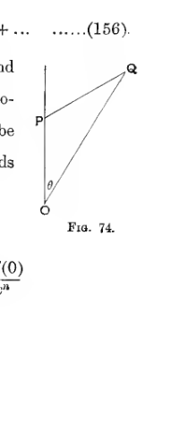
A vertical axis from \(O\) to \(P\) and an oblique side from \(O\) to \(Q\) form the angle \(\theta\) at the origin, while a second segment joins \(P\) to \(Q\). The triangle represents the geometry used to interpret \(f(a)=1/PQ\) and connect differentiation in \(a\) with differentiation in \(x\).
249. A more convenient form for \(P_n\) can be obtained as follows.
Let
so that
From this relation we can expand \(y\) by Lagrange’s Theorem (cf. Edwards, Differential Calculus, § 517) in the form
Differentiating with respect to \(\mu\),
From equation (157), however, we find
Equating the coefficients of \(h^n\) in the two expansions, we find
250. This last formula supplies the easiest way of calculating actual values of \(P_n\). The values of \(P_1, P_2, \ldots P_7\) are found to be
251. The equation \((\mu^2-1)^n=0\) has \(2n\) real roots, of which \(n\) may be regarded as coinciding at \(\mu=1\), and \(n\) at \(\mu=-1\). By a well-known theorem, the first derived equation,
will have \(2n-1\) real roots separating those of the original equation. Passing to the \(n\)th derived equation, we find that the equation
has \(n\) real roots, and that these must all lie between \(\mu=-1\) and \(\mu=+1\). The roots are all separate, for two roots could only be coincident if the original equation \((\mu^2-1)^n=0\) had \(n+1\) coincident roots.
Thus the \(n\) roots of the equation \(P_n(\mu)=0\) are all real and separate and lie between \(\mu=-1\) and \(\mu=+1\).
252. Putting \(\mu=1\), we obtain
so that \(P_1=P_2=\cdots=1\). Similarly, when \(\mu=-1\), we find (cf. § 240) that \(-P_1=+P_2=-P_3=\cdots=-1\).
We can now shew that throughout the range from \(\mu=-1\) to \(\mu=+1\), the numerical value of \(P_n\) is never greater than unity. We have
so that on picking out coefficients of \(h^n\),
Every coefficient is positive, so that \(P_n\) is numerically greatest when each cosine is equal to unity, i.e. when \(\theta=0\). Thus \(P_n\) is never greater than unity.
Figure 75 shews the graphs of \(P_1, P_2, P_3, P_4\), from \(\mu=-1\) to \(\mu=+1\), the value of \(\theta\) being taken as abscissa.
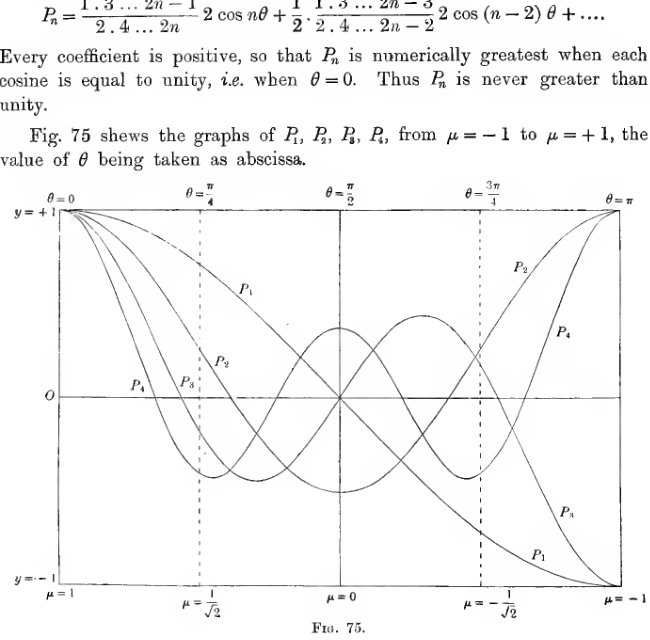
A rectangular plot shows the curves of \(P_1, P_2, P_3\), and \(P_4\) across the interval from \(\mu=1\) to \(\mu=-1\), with vertical markers at \(\theta=\pi/4\), \(\pi/2\), and \(3\pi/4\). The four curves oscillate with increasing complexity while remaining within the bounds \(y=+1\) and \(y=-1\).
Relations Between Coefficients of Different Orders#
253. We have
Differentiating with regard to \(h\),
so that
Equating coefficients of \(h^n\), we obtain
This is the difference equation satisfied by three successive coefficients.
Again, if we differentiate equation (160) with respect to \(\mu\),
so that, by combining with (161),
Equating coefficients of \(h^n\),
Differentiating (162), we obtain
Eliminating \(\mu\,\partial P_n/\partial \mu\) from this and (163),
By integration of this we obtain
whilst by the addition of successive equations of the type of (164), we obtain
254. We have had the general theorem (§ 237)
from which the theorem
follows as a special case. Or since
To find \(\int_{-1}^{+1}P_n^2(\mu)\, d\mu\), let us square the equation
multiply by \(d\mu\), and integrate from \(\mu=-1\) to \(\mu=+1\). The result is
all products of the form \(P_nP_m\) vanishing on integration, by equation (167).
Thus \(\int_{-1}^{+1}P_n^2\, d\mu\) is the coefficient of \(h^{2n}\) in
i.e. in
and this coefficient is easily seen to be \(\frac{2}{2n+1}\). We accordingly have
255. We can obtain this theorem in another way, and in a more general form, by using the expansion of § 240, namely
where \(\theta\) is the angle between the point \(P\) and the element \(dS\) on the sphere. This expansion is true for any function \(F\) subject to certain restrictions. Taking \(F\) to be a surface harmonic \(S_n\) of order \(n\), we obtain
all other integrals vanishing by the theorem of § 237. Thus
or
This is the general theorem, of which equation (168) expresses a particular case. To pass to this particular case, we replace \(S_n\) by \(P_n(\mu)\) and obtain, instead of equation (169),
or, after integrating with respect to \(\phi\),
agreeing with equation (168).
Expansions in Legendre’s Coefficients#
256. Theorem. The value of any function of \(\theta\), which is finite and single-valued from \(\theta=0\) to \(\theta=\pi\), and which has only a finite number of discontinuities and of maxima and minima within this range, can be expressed, for every value of \(\theta\) within this range for which the function is continuous, as a series of Legendre’s Coefficients.
This is simply a particular case of the theorem of § 240. It is therefore unnecessary to give a separate proof of the theorem.
The expansion is easily found. Assume it to be
then on multiplying by \(P_n(\mu)\, d\mu\), and integrating from \(\mu=-1\) to \(\mu=+1\), we obtain
every integral vanishing, except that for which \(s=n\). Thus
giving the coefficients in the expansion.
If \(f(\mu)\) has a discontinuity when \(\mu=\mu_0\), the value assumed by the series (168) on putting \(\mu=\mu_0\) is, as in § 240, equal to
where \(f_1(\mu_0), f_2(\mu_0)\) are the values of \(f(\mu)\) on the two sides of the discontinuity.
Harmonic Potentials#
257. We are now in a position to apply the results obtained to problems of electrostatics.
Consider first a sphere having a surface density of electricity \(S_n\). The potential at an internal point \(P\) is
this expression being evaluated at \(P\).
Similarly the potential at any external point \(P\) is
These potentials are obviously solutions of Laplace’s equation, and it is easy to verify that they correspond to the given surface density, for
This gives us the fundamental property of harmonics, on which their application to potential-problems depends. A distribution of surface density \(S_n\) on a sphere gives rise to a potential which at every point is proportional to \(S_n\).
258. The density of the most general surface distribution can, by the theorem of § 240, be expressed as a sum of surface harmonics, say
in which \(S_0\) is of course simply a constant. The potential, by the results of the last section, is
Examples of the Use of Harmonic Potentials#
I. Potential of spherical cap and circular ring#
259. As a first example, let us find the potential of a spherical cap of angle \(\alpha\), i.e. the surface cut from a sphere by a right circular cone of semivertical angle \(\alpha\), electrified to a uniform surface density \(\sigma_0\).
We can regard this as a complete sphere electrified to surface density \(\sigma\), where
The value of \(\sigma\) being symmetrical about the axis \(\theta=0\), let us assume for the value of \(\sigma\) expanded in harmonics
then, by equation (171),
by equation (165), except when \(n=0\). For this case we have
Thus
It is of interest to notice that when \(\theta=\alpha\), the value of \(\sigma\) given by this series is \(\sigma=\tfrac{1}{2}\sigma_0\), as it ought to be (cf. expression (172)).
The potential at an external point may now be written down in the form
and that at an internal point is
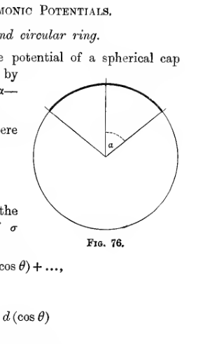
A sphere is cut by two radii meeting at the centre, forming a narrow spherical cap at the top. The angle between the vertical radius and the slanted radius is labelled \(\alpha\), showing the cap defined by a cone of semi-vertical angle \(\alpha\).
On differentiating with respect to \(\alpha\), we obtain the potential of a ring of line density \(\sigma_0a\, d\alpha\). At a point at which \(r>a\), we differentiate expression (176), and obtain
or, putting \(a\sigma_0 d\alpha = \tau\) and simplifying,
Obviously the potential at a point at which \(r<a\) can be obtained on replacing \((a/r)^{n+1}\) by \((r/a)^n\).
260. These last results can be obtained more directly by considering that at any point on the axis \(\theta=0\) the potential is
or, if \(r>a\),
and expression (178) is the only expansion in Lagrange’s coefficients which satisfies Laplace’s equation and agrees with this expression when \(\theta=0\).
II. Uninsulated sphere in field of force#
261. The method of harmonics enables us to find the field of force produced when a conducting sphere is introduced into any permanent field of force. Let us suppose first that the sphere is uninsulated.
Let the sphere be of radius \(a\). Round the centre of the field describe a slightly larger sphere of radius \(a'\), so small as not to enclose any of the fixed charges by which the permanent field of force is produced. Between these two spheres the potential of the field will be capable of expression in a series of rational integral harmonics, say
The problem is to superpose on this a potential, produced by the induced electrification on the sphere, which shall give a total potential equal to zero over the sphere \(r=a\). Clearly the only form possible for this new potential is
Thus the total potential between the spheres \(r=a\) and \(r=a'\) is
Putting \(V_n=r^nS_n\), the surface density of electrification on the sphere is, by Coulomb’s Law,
This result is indeed obvious from § 258, on considering that the surface electrification must give rise to the potential (180).
If \(n\) is different from zero,
where the integration is over any sphere, so that
and
Thus the total charge on the sphere
and \(V_0\) was the potential of the original field at the centre of the sphere.
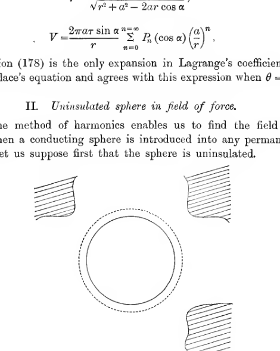
A conducting sphere sits at the centre of a surrounding dotted circular boundary, while hatched regions outside indicate the original permanent field acting around it. The sketch represents the decomposition of the external field into a local harmonic expansion about the sphere.
262. Incidentally we may notice, as a consequence of (181), that the mean value of a potential averaged over the surface of any sphere which does not include any electric charge is equal to the potential at the centre (cf. § 50).
If the sphere is introduced insulated, we superpose on to the field already given, the field of a charge \(E\) spread uniformly over the surface of the sphere, and the potential of this field is \(\frac{E}{r}\). We obtain the particular case of an uncharged sphere by taking \(E = V_0a\), and the potential of this field, namely \(V_0\left(\frac{a}{r}\right)\), just annihilates the first term in expression (180), to which it has to be added.
It will easily be verified that, on taking the potential of the original field to be \(V_1 = Fx\), we arrive at the results already obtained in § 217.
III. Dielectric sphere in a field of force.#
263. An analogous treatment will give the solution when a homogeneous dielectric sphere is placed in a permanent field of force. The treatment will, perhaps, be sufficiently exemplified by considering the case of the simple field of potential
Let us assume for the potential \(V_o\) outside the sphere
and for the potential \(V_i\) inside the sphere
no term of the form \(\frac{S_1}{r^2}\) being included in \(V_i\), as it would give infinite potential at the origin. The constants \(\alpha, \beta\) are to be determined from the conditions
These give
whence
so that
Thus the lines of force inside the dielectric are all parallel to those of the original field, but the intensity is diminished in the ratio \(\frac{3}{K+2}\). The field is shewn in fig. 78.
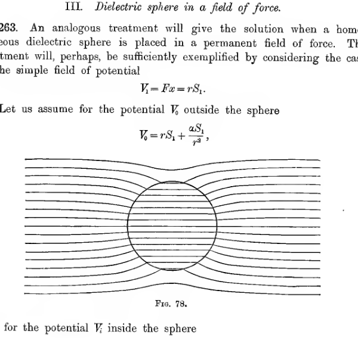
A circular dielectric sphere is placed in a uniform field whose lines run horizontally across the page. The field lines remain nearly parallel far away but bulge around the sphere and pass straight through its interior with reduced crowding, illustrating the diminished internal intensity.
IV. Nearly spherical surfaces.#
264. If \(r=a\), the surface \(r=a+\chi\), where \(\chi\) is a function of \(\theta\) and \(\phi\), will represent a surface which is nearly spherical if \(\chi\) is small. In this case \(\chi\) may be regarded as a function of position on the surface of the sphere \(r=a\), and expanded in a series of rational integral harmonics in the form
in which \(S_1, S_2, \ldots\) are all small.
The volume enclosed by this surface is
If \(S_0=0\), the volume is that of the original sphere \(r=a\).
The following special cases are of importance:
To obtain the form of this surface, we pass a distance \(\epsilon\cos \theta\) along the radius at each point of the sphere \(r=a\). It is easily seen that when \(\epsilon\) is small the locus of the points so obtained is a sphere of radius \(a\), of which the centre is at a distance \(\epsilon\) from the origin.
The most general form for \(a_1S_1\) is \(lx+my+nz\), and this may be expressed as \(a\epsilon\cos \theta\), where \(\theta\) is now measured from the line of which the direction cosines are in the ratio \(l:m:n\). Thus the surface is the same as before.
Since \(r\) is nearly equal to \(a\), this may be written
or
Thus the surface is an ellipsoid of which the centre is at the origin. It will easily be found that \(r = a + \epsilon P_2\) represents a spheroid of semi-axes \(a+\epsilon, a-\frac{\epsilon}{2}\), and therefore of ellipticity \(\frac{3\epsilon}{2a}\).
265. We can treat these nearly spherical surfaces in the same way in which spherical surfaces have been treated, neglecting the squares of the small harmonics as they occur.
266. As an example, suppose the surface \(r=a+S_n\) to be a conductor, raised to unit potential. We assume an external potential
where \(A\) and \(B\) have to be found from the condition that \(V=1\) when \(r=a+S_n\). Neglecting squares of \(S_n\), this gives
so that
and
By applying Gauss’ Theorem to a sphere of radius greater than \(a\) we readily find that the total charge is \(a\), the coefficient of \(\frac{1}{r}\). Thus the capacity of the conductor is different from that of the sphere only by terms in \(S_n^2\), but the surface distribution is different, for
the surface density becoming uniform, as it ought, when \(n=1\), i.e. when the conductor is still spherical.
267. As a second example, let us examine the field inside a spherical condenser when the two spheres are not quite concentric. Taking the centre of the inner as origin, let the equations of the two spheres be
We have to find a potential which shall have, say, unit value over \(r=a\), and shall vanish over \(r=b+\epsilon P_1\). Assume
when \(B\) and \(D\) are small, then we must have
These equations must be true all over the spheres, so that the coefficients of \(P_1\) and the terms which do not involve \(P_1\) must vanish separately. Thus
From the first two equations
and this being the coefficient of \(\frac{1}{r}\) in the potential, is the capacity of the condenser. Thus to a first approximation, the capacity of the condenser remains unaltered, but since \(B\) and \(D\) do not vanish, the surface distribution is altered.
V. Collection of Electric Charges.#
267a. If a collection of electric charges are arranged in any way whatever, subject only to the condition that none of them lie outside the sphere \(r=a\), then the potential at any point outside the sphere must be
where \(e\) is the total charge inside the sphere (cf. § 266) and \(S_1, S_2, \ldots\) are surface harmonics which depend on the arrangement of the charges inside the sphere.
If the total charge is not zero, the potential can also be treated as in § 67, and on comparing the two expressions obtained for the potential, we can identify the harmonics \(S_1, S_2, \ldots\) We find that
and it will be easily verified by differentiation that the expressions on the right are harmonics.
This example is of some interest in connection with the electron-theory of matter, for a collection of positive and negative charges all collected within a distance \(a\) of a centre may give some representation of the structure of a molecule. The total charge on a molecule is zero, so that we must take \(e=0\), and the potential becomes
The most general form for \(S_1\) is (cf. § 239) \(\frac{1}{r}(Ax+By+Cz)\), or \(\mu\cos \theta\), where \(\theta\) is the angle between the lines from the origin to the point \(x, y, z\) and that to the point \(A, B, C\) and \(\mu\) is \(\sqrt{(A^2+B^2+C^2)}\).
Thus the term which is important in the potential when \(r\) is large is \(\frac{\mu\cos \theta}{r^2}\), shewing that at a sufficient distance the molecule has the same field of force as a certain doublet of strength \(\mu\). Clearly when \(\mu\) has any value different from zero, the molecule is “polarised” (cf. § 142) in Faraday’s sense. If \(\mu=0\), the potential becomes
shewing that the force now falls off as the inverse fourth power of the distance.
It is worth noticing that the average force at any distance \(r\) is always zero, so that to obtain forces which are, on the average, repulsive, we have to assume the presence of terms in the potential which do not satisfy Laplace’s equation, and which accordingly are not derivable from forces obeying the simple law \(e/r^2\) (cf. § 192).
Further Analytical Theory of Harmonics#
General Theory of Zonal Harmonics.#
268. The general equation satisfied by a surface harmonic of order \(n\), which is symmetrical about an axis, has already been seen to be
One solution is known to be \(P_n\), so that we can find the other by a known method. Assume \(S_n=P_nu\) as a solution, where \(u\) is a function of \(\mu\). The equation becomes
and, since \(P_n\) is itself a solution of
Multiplying this by \(u\) and subtracting from (183), we are left with
or, multiplying by \(P_n\) and rearranging,
or again
On integration this becomes
We may therefore take
in which the limits may be any we please. If we write
the complete solution of equation (182) is,
269. The two solutions \(P_n\) and \(Q_n\) can be obtained directly by solving the original equation (182) in a series of powers of \(\mu\).
Assume a solution
substitute in equation (182), and equate to zero the coefficients of the different powers of \(\mu\). The first coefficient is found to be \(b_0r(r-1)\), so that if this is to vanish we must have \(r=0\) or \(r=1\). The value \(r=0\) leads to the solution
while the value \(r=1\) leads to the solution
The complete solution of the equation is therefore
If \(n\) is integral one of the two series terminates, while the other does not. If \(n\) is even the series \(u_0\) terminates, while if \(n\) is odd the terminating series is \(u_1\). But we have already found one terminating series which is a solution of the original equation, namely \(P_n\). Hence in either case the terminating series must be proportional to \(P_n\), and therefore the infinite series must be proportional to \(Q_n\).
270. We can obtain a more useful form for \(Q_n\) from expression (184). The roots of \(P_n(\mu)=0\) are, as we have seen, \(n\) in number, all real and separate, and lying between \(-1\) and \(+1\). Let us take these roots to be \(a_1, a_2, \ldots, a_n\). Then
on resolving into partial fractions. Putting \(\mu=+1\) and \(-1\), we find at once that \(a=\tfrac{1}{2}, b=-\tfrac{1}{2}\).
Equation (185) now becomes
so that, on integration,
On multiplying by \(P_n(\mu)\), we obtain from equation (184),
where \(W_{n-1}\) is a rational integral function of \(\mu\) of degree \(n-1\).
It is now clear that \(Q_n(\mu)\) is finite and continuous from \(\mu=-1\) to \(\mu=+1\), but becomes infinite at the actual values \(\mu=\pm 1\).
To find the value of \(W_{n-1}\) we substitute expression (186) in Legendre’s equation, of which it is known to be a solution, and obtain
Since \(W_{n-1}\) is a rational integral algebraic function of \(\mu\) of degree \(n-1\), it can be expanded in the form
so that
Comparing with (187), we find that \(a_s=0\) when \(s\) is odd, and is equal to
when \(s\) is even. Thus
and
271. When we are dealing with complete spheres it is impossible for the solution \(Q_n\) to occur. If the space is limited in such a way that the infinities of the \(Q_n\) harmonic are excluded, it may be necessary to take into account both the \(P_n\) and \(Q_n\) harmonics. An instance of such a case occurs in considering the potential at points outside a conductor of which the shape is that of a complete cone.
Tesseral Harmonics.#
272. The equation satisfied by the general surface harmonic \(S_n\) is
As a solution, let us examine
where \(\Theta\) is a function of \(\theta\) only, and \(\Phi\) is a function of \(\phi\) only. On substituting this value in the equation, and dividing by \(\Theta\Phi/\sin^2 \theta\), we obtain
We must therefore have
The solution of the former equation is single valued only when \(\kappa\) is of the form \(-m^2\), where \(m\) is an integer. In this case
and \(\Theta\) is given by
or, in terms of \(\mu\),
an equation which reduces to Legendre’s equation when \(m=0\).
273. To obtain the general solution of equation (188), consider the differential equation
of which the solution is readily seen to be
If we differentiate equation (189) \(s\) times we obtain
If in this we put \(s=n\), and again differentiate with respect to \(\mu\), we obtain
which is Legendre’s equation with \(\frac{\partial^n z}{\partial \mu^n}\) as variable. Thus a solution of this equation is seen to be
giving at once the form for \(P_n\) already obtained in § 249. The general solution of equation (192) we know to be
If we now differentiate (192) \(m\) times, the result is the same as that of differentiating (189) \(m+n+1\) times, and is therefore obtained by putting \(s=m+n+1\) in (191). This gives
or, multiplying by \((1-\mu^2)^{m/2}\),
Let
Then
and
Thus \(v\) satisfies
and this is the same as equation (188), which is satisfied by \(\Theta\).
274. The solution of equation (188) has now been seen to be
where
Hence
The functions
are known as the associated Legendre functions of the first and second kinds, and are generally denoted by \(P_n^m(\mu), Q_n^m(\mu)\). As regards the former, we may replace \(P_n\), from equation (159), by
and obtain the function in the form
It is clear from this form that the function vanishes if \(m+n>2n\), i.e. if \(m>n\). It is also clear that it is a rational integral function of \(\sin \theta\) and \(\cos \theta\). From the form of \(Q_n(\mu)\), which is not a rational integral function of \(\mu\), it is clear that \(Q_n^m(\mu)\) cannot be a rational integral function of \(\sin \theta\) and \(\cos \theta\).
Thus of the solution we have obtained for \(S_n\), only the part
gives rise to rational integral harmonics. The terms \(P_n^m(\mu)\cos m\phi\) and \(P_n^m(\mu)\sin m\phi\) are known as tesseral harmonics.
Clearly there are \((2n+1)\) tesseral harmonics of degree \(n\), namely
These may be regarded as the \((2n+1)\) independent rational integral harmonics of degree \(n\) of which the existence has already been proved in § 239.
Using the formula
and substituting the value obtained in § 247 for \(P_n(\mu)\) (cf. equation (155)), we obtain \(P_n^m(\mu)\) in the form
The values of the tesseral harmonics of the first four orders are given in the following table.
Order 1.
Order 2.
Order 3.
Order 4.
275. We have now found that the most general rational integral surface harmonic is of the form
in which \(P_n^m(\mu)\) is to be interpreted to mean \(P_n(\mu)\), when \(m=0\).
Let us denote any tesseral harmonics of the type
by \(S_n^m\).
Then by § 237,
if \(n\neq n'\). If \(n=n'\), then
and this vanishes except when \(m=m'\). When \(n=n'\) and \(m=m'\) the value of \(\iint S_n^mS_n^{m'} d\omega\) clearly depends on that of
and this we now proceed to obtain.
We have
Since \(\frac{\partial^n z}{\partial \mu^n}=P_n\) is a solution of equation (191), we obtain, on taking \(s=m+n\) in this equation, and multiplying throughout by \((1-\mu^2)^{m-1}\),
which, again, may be written
In equation (195) the first term on the right-hand vanishes, so that
a reduction formula from which we readily obtain
These results enable us to find any integral of the type \(\iint S_nS'_{n'} d\omega\).
Biaxal Harmonics.#
276. It is often convenient to be able to express zonal harmonics referred to one axis in terms of harmonics referred to other axes, i.e. to be able to change the axes of reference of zonal harmonics.
Let \(P_n\) be a harmonic having \(OP\) as axis. At \(Q\) the value of this is \(P_n(\cos \gamma)\), where \(\gamma\) is the angle \(PQ\), and our problem is to express this harmonic of order \(n\) as a sum of zonal and tesseral harmonics referred to other axes. With reference to these axes, let the coordinates of \(Q\) be \(\theta, \phi\), let those of \(P\) be \(\Theta, \Phi\), and let us assume a series of the type
Let us multiply by \(P_n^s(\cos \theta)\cos s\phi\) and integrate over the surface of a unit sphere. We obtain
By equation (169),
and
Thus
and similarly
This analysis needs modification when \(s=0\), but it is readily found that
so that
General Theory of Curvilinear Coordinates#
277. Let us write
where \(\phi, \psi, \chi\) denote any functions of \(x, y, z\). Then we may suppose a point in space specified by the values of \(\lambda, \mu, \nu\) at the point, i.e. by a knowledge of those numbers the three families of surfaces
which pass through it.
The values of \(\lambda, \mu, \nu\) are called “curvilinear coordinates” of the point. A great simplification is introduced into the analysis connected with curvilinear coordinates, if the three families of surfaces are chosen in such a way that they cut orthogonally at every point. In what follows we shall suppose this to be the case - the coordinates will be “orthogonal curvilinear coordinates.”
The points \(\lambda, \mu, \nu\) and \(\lambda + d\lambda, \mu, \nu\) will be adjacent points, and the distance between them will be equal to \(d\lambda\) multiplied by a function of \(\lambda, \mu\), and \(\nu\) - let us assume it equal to \(\frac{d\lambda}{h_1}\). Similarly, let the distance from \(\lambda, \mu, \nu\) to \(\lambda, \mu+d\mu, \nu\) be \(\frac{d\mu}{h_2}\), and let the distance from \(\lambda, \mu, \nu\) to \(\lambda, \mu, \nu+d\nu\) be \(\frac{d\nu}{h_3}\).
Then the distance \(ds\) from \(\lambda, \mu, \nu\) to \(\lambda+d\lambda, \mu+d\mu, \nu+d\nu\) will be given by
this being the diagonal of a rectangular parallelepiped of edges
Laplace’s equation in curvilinear coordinates is obtained most readily by applying Gauss’ Theorem to the small rectangular parallelepiped of which the edges are the eight points
In this way we obtain the relation
in the form
and as we have already seen that equation (197) is exactly equivalent to Laplace’s equation \(\nabla^2V=0\), it appears that equation (198) must represent Laplace’s equation transformed into curvilinear coordinates.
In any particular system of curvilinear coordinates the method of procedure is to express \(h_1, h_2, h_3\) in terms of \(\lambda, \mu\) and \(\nu\), and then try to obtain solutions of equation (198), giving \(V\) as a function of \(\lambda, \mu\) and \(\nu\).
Spherical Polar Coordinates.#
278. The system of surfaces \(r=\text{cons.}, \theta=\text{cons.}, \phi=\text{cons.}\) in spherical polar coordinates gives a system of orthogonal curvilinear coordinates. In these coordinates equation (198) assumes the form
already obtained in § 233, which has been found to lead to the theory of spherical harmonics.
Confocal Coordinates.#
279. After spherical polar coordinates, the system of curvilinear coordinates which comes next in order of simplicity and importance is that in which the surfaces are confocal ellipsoids and hyperboloids of one and two sheets. This system will now be examined.
Taking the ellipsoid
as a standard, the conicoid
will be confocal with the standard ellipsoid whatever value \(\theta\) may have, and all confocal conicoids are represented in turn by this equation as \(\theta\) passes from \(-\infty\) to \(+\infty\).
If the values of \(x, y, z\) are given, equation (200) is a cubic equation in \(\theta\). It can be shown that the three roots in \(\theta\) are all real, so that three confocals pass through any point in space, and it can further be shown that at every point these three confocals are orthogonal. It can also be shown that of these confocals one is an ellipsoid, one a hyperboloid of one sheet, and one a hyperboloid of two sheets.
Let \(\lambda, \mu, \nu\) be the three values of \(\theta\) which satisfy equation (200) at any point, and let \(\lambda, \mu, \nu\) refer respectively to the ellipsoid, hyperboloid of one sheet, and hyperboloid of two sheets. Then \(\lambda, \mu, \nu\) may be taken to be orthogonal curvilinear coordinates, the families of surfaces \(\lambda=\text{cons.}, \mu=\text{cons.}, \nu=\text{cons.}\) being respectively the system of ellipsoids, hyperboloids of one sheet, and hyperboloids of two sheets, which are confocal with the standard ellipsoid (199).
280. The first problem, as already explained, is to find the quantities which have been denoted in § 277 by \(h_1, h_2, h_3\). As a step towards this, we begin by expressing \(x, y, z\) as functions of the curvilinear coordinates \(\lambda, \mu, \nu\).
The expression
is clearly a rational integral function of \(\theta\) of degree \(3\), the coefficient of \(\theta^3\) being \(-1\). It vanishes when \(\theta\) is equal to \(\lambda, \mu\) or \(\nu\), these being the curvilinear coordinates of the point \(x, y, z\). Hence the expression must be equal, identically, to
Putting \(\theta=-a^2\) in the identity obtained in this way, we get the relation
so that \(x, y, z\) are given as functions of \(\lambda, \mu, \nu\) by the relations
281. To examine changes as we move along the normal to the surface \(\lambda=\text{cons.}\), we must keep \(\mu\) and \(\nu\) constant. Thus we have, on logarithmic differentiation of equation (201),
and there are of course similar equations giving \(dy\) and \(dz\). Thus for the length \(ds\) of an element of the normal to \(\lambda=\text{constant}\), we have
The quantity \(ds\) is, however, identical with the quantity called \(\frac{d\lambda}{h_1}\) in § 277, so that we have
and clearly \(h_2\) and \(h_3\) can be obtained by cyclic interchange of the letters \(\lambda, \mu\) and \(\nu\).
282. If for brevity we write
we find that
so that by substitution in equation (198), Laplace’s equation in the present coordinates is seen to be
On multiplying throughout by \(\Delta_\lambda\Delta_\mu\Delta_\nu\), this equation becomes
Let us now introduce new variables \(\alpha, \beta, \gamma\), given by
then we have
and equation (204) becomes
Distribution of Electricity on a freely-charged Ellipsoid.#
283. Before discussing the general solution of Laplace’s equation, it will be advantageous to examine a few special problems.
In the first place, it is clear that a particular solution of equation (205) is
where \(A, B\) are arbitrary constants. The equipotentials are the surfaces \(\alpha=\text{constant}\), and are therefore confocal ellipsoids. Thus we can, from this solution, obtain the field when an ellipsoidal conductor is freely electrified.
For instance, if the ellipsoid
is raised to unit potential, the potential at any external point will be given by equation (206) provided we choose \(A\) and \(B\) so as to have \(V=1\) when \(\lambda=0\), and \(V=0\) when \(\lambda=\infty\). In this way we obtain
The surface density at any point on the ellipsoid is given by
Thus the surface density at different points of the ellipsoid is proportional to \(h_1\).
284. The quantity \(h_1\) admits of a simple geometrical interpretation. Let \(l, m, n\) be the direction-cosines of the tangent plane to the ellipsoid at any point \(\lambda, \mu, \nu\), and let \(p\) be the perpendicular from the origin on to this tangent plane. Then from the geometry of the ellipsoid we have
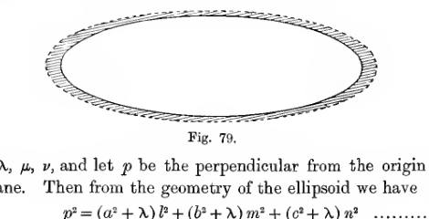
A flattened ellipsoidal section is shown with a narrow shaded band outside its boundary. The shading thickness varies around the ellipse to indicate that the surface charge on a freely electrified ellipsoid is proportional to the perpendicular from the centre to the tangent plane at each point.
Moving along the normal, we shall come to the point \(\lambda+d\lambda, \mu, \nu\). The tangent plane at this point has the same direction-cosines \(l, m, n\) as before, but the perpendicular from the origin will be \(p+dp\), where \(dp = \frac{d\lambda}{h_1}\). To obtain \(dp\) we differentiate equation (209), allowing \(\lambda\) alone to vary, and so have
Comparing this with \(dp = \frac{d\lambda}{h_1}\), we see that \(h_1 = 2p\).
Thus the surface density at any point is proportional to the perpendicular from the centre on to the tangent plane at the point.
In fig. 79, the thickness of the shading at any point is proportional to the perpendicular from the centre on to the tangent plane, so that the shading represents the distribution of electricity on a freely electrified ellipsoid.
It will be easily verified that the outer boundary of this shading must be an ellipsoid, similar to and concentric with the original ellipsoid.
285. Replacing \(h_1\) by \(2p\) in equation (208), we find for the total charge \(E\) on the ellipsoid,
Since \(\iint p\, dS\) is three times the volume of the ellipsoid, and therefore equal to \(4\pi abc\), this reduces to
Since the ellipsoid is supposed to be raised to unit potential, this quantity \(E\) gives the capacity of an ellipsoidal conductor electrified in free space.
The capacity can however be obtained more readily by examining the form of the potential at infinity. At points which are at a distance \(r\) from the centre of the ellipsoid so great that \(a, b, c\) may be neglected in comparison with \(r\), \(\lambda\) becomes equal to \(r^2\), so that \(\Delta_\lambda = r^3\), and
Thus at infinity the limiting form assumed by equation (207) is
and since the value of \(V\) at infinity must be \(\frac{E}{r}\), the value of \(E\) follows at once.
A freely-charged spheroid.#
286. The integral \(\int_0^\infty \frac{d\lambda}{\Delta_\lambda}\) is integrable if any two of the semi-axes become equal to one another.
If \(b=c\), the ellipsoid is a prolate spheroid, and its capacity is found to be
where \(e\) is the eccentricity.
If \(a=b\), the ellipsoid is an oblate spheroid, and its capacity is found to be
Elliptic Disc.#
287. In the preceding analysis, let \(a\) become vanishingly small, then the conductor becomes an elliptic disc of semi-axes \(b\) and \(c\).
The perpendicular from the origin on to the tangent-plane is given, as in the ellipsoid, by
and when \(a\) is made very small in the limit, this becomes
so that the surface density at any point \(x, y\) in the disc is proportional to
Circular Disc.#
288. On further simplifying by putting \(b=c\), we arrive at the case of a circular disc. The density of electrification is seen at once from expression (210) to be proportional to
and therefore varies inversely as the shortest chord which can be drawn through the point.
Moreover, when \(a=0\) and \(b=c\), we have \(\Delta_\lambda = (c^2+\lambda)\sqrt{\lambda}\), so that
Thus the capacity of a circular disc is \(\frac{2c}{\pi}\), and when the disc is raised to potential unity, the potential at any external point is
where \(\lambda\) is the positive root of
289. Lord Kelvin* quotes some interesting experiments by Coulomb on the density at different points on a circular plate of radius \(5\) inches. The results are given in the following table:
Distances from the plate’s edge |
Observed Densities |
Calculated Densities |
|---|---|---|
5 ins. |
1 |
1 |
4 |
1.001 |
1.020 |
3 |
1.005 |
1.090 |
2 |
1.17 |
1.250 |
1 |
1.52 |
1.667 |
0.5 |
2.07 |
2.294 |
0 |
2.90 |
\(\infty\) |
* Papers on Elect. and Mag. p. 179.
290. By inverting the distribution of electricity on a circular disc, taking the origin of inversion to be a point in the plane of the disc, Kelvin* has obtained the distribution of electricity on a disc influenced by a point charge in its plane, a problem previously solved by another method by Green. The general Green’s function for a circular disc has been obtained by Hobson†.
Spherical Bowl.#
291. Lord Kelvin has also, by inversion, obtained the solution for a spherical bowl of any angle freely electrified. Let the bowl be a piece of a sphere of diameter \(f\). Let the distance from the middle point of the bowl to any point of the bowl be \(r\), and let the greatest value of \(r\), i.e. the distance from a point on the edge to the middle point of the bowl, be \(a\). Then Kelvin finds for the electric densities inside and outside the bowl:
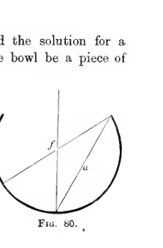
A spherical bowl is shown in section with the rim opening upward. A vertical diameter passes through the middle point of the bowl, a slant segment of length \(f\) marks the sphere’s diameter, and another segment of length \(a\) runs from the middle point to the rim, illustrating the geometric parameters used in Kelvin’s density formulas.
Some numerical results calculated from these formulae are of interest. The six values in the following tables refer to the middle point and the five points dividing the arc from the middle point to the edge into six equal parts.
Plane disc
\(\rho_i\) |
\(\rho_o\) |
Mean |
|---|---|---|
1.00 |
1.00 |
1.0000 |
1.01 |
1.01 |
1.0142 |
1.06 |
1.06 |
1.0607 |
1.15 |
1.15 |
1.1547 |
1.34 |
1.34 |
1.3416 |
1.81 |
1.81 |
1.8091 |
Curved disc arc \(10^\circ\)
\(\rho_i\) |
\(\rho_o\) |
Mean |
|---|---|---|
0.91 |
1.06 |
1.0000 |
0.95 |
1.08 |
1.0141 |
0.99 |
1.13 |
1.0605 |
1.09 |
1.22 |
1.1542 |
1.27 |
1.41 |
1.3407 |
1.74 |
1.88 |
1.8071 |
Curved disc arc \(20^\circ\)
\(\rho_i\) |
\(\rho_o\) |
Mean |
|---|---|---|
0.86 |
1.14 |
1.0000 |
0.88 |
1.15 |
1.0010 |
0.92 |
1.20 |
1.0369 |
1.02 |
1.29 |
1.1106 |
1.29 |
1.56 |
1.2606 |
1.67 |
1.94 |
1.6474 |
Bowl arc \(270^\circ\)
\(\rho_i\) |
\(\rho_o\) |
Mean |
|---|---|---|
0.013 |
1.986 |
1.0000 |
0.014 |
1.987 |
1.0009 |
0.018 |
1.991 |
1.0041 |
0.025 |
1.998 |
1.0118 |
0.045 |
2.018 |
1.0316 |
0.120 |
2.093 |
1.1060 |
Bowl arc \(340^\circ\)
\(\rho_i\) |
\(\rho_o\) |
Mean |
|---|---|---|
0.0001 |
1.9999 |
1.0000 |
0.0002 |
1.9999 |
1.0000 |
0.0002 |
2.0000 |
1.0001 |
0.0004 |
2.0001 |
1.0002 |
0.0009 |
2.0006 |
1.0007 |
0.0042 |
2.0040 |
1.0041 |
Discussing these results, Lord Kelvin says: “It is remarkable how slight an amount of curvature produces a very sensible excess of density on the convex side in the first two cases (\(10^\circ\) and \(20^\circ\)), yet how nearly the mean of the densities on the convex and concave sides at any point agrees with that at the corresponding point on a plane disc shewn in the first column. The results for bowls of \(270^\circ\) and \(340^\circ\) illustrate the tendency of the whole charge to the convex surface, as the case of a thin spherical conducting surface with an infinitely small aperture is approached.”
* Papers on Elect. and Mag. p. 183.
† Trans. Camb. Phil. Soc. xviii. p. 277.
Ellipsoidal Harmonics.#
292. We now return to the general equations (205), namely
and examine the nature of the general solutions of this equation.
Let us assume a tentative solution
in which \(L\) is a function of \(\lambda\) only, \(M\) a function of \(\mu\) only, and \(N\) a function of \(\nu\) only. Substituting this solution the equation reduces to
We cannot solve this equation by methods of the kind used in developing the theory of spherical harmonics, but it is easy to obtain solutions of limited generality in which
are rational integral functions of \(\lambda, \mu\) and \(\nu\) respectively. These will be found to correspond to the solution, in spherical polar coordinates, in a series of rational integral harmonics.
293. Assume general power series of the form
then on substitution in equation (211), it will be found that we must have
Thus we must have
and similar equations, with the same constants \(A\) and \(B\), must be satisfied by \(M\) and \(N\).
Equation (212), on substituting for \(\alpha\) in terms of \(\lambda\), becomes
a differential equation of the second order in \(\lambda\), while \(M\) and \(N\) satisfy equations which are identical except that \(\mu\) and \(\nu\) are the variables.
The solution of equation (213) is known as a Lame’s function, or ellipsoidal harmonic. The function is commonly written as \(E_n^p(\lambda)\), where \(p, n\) are new arbitrary constants, connected with the constants \(A\) and \(B\) by the relations
Thus \(E_n^p(\lambda)\) is a solution of
and a solution of equation (211) is
294. Equation (213) being of the second order, must have two independent solutions. Denoting one by \(L\), let the other be supposed to be \(Lu\). Then we must have
so that on multiplying the former equation by \(u\), and subtracting from the latter,
Thus
and the complete solution is seen to be
where \(C\) and \(D\) are arbitrary constants.
Accordingly, the complete solution of equation (211) can be written as
This corresponds exactly to the general solution in rational integral spherical harmonics, namely
Ellipsoid in uniform field of force.#
295. As an illustration of the use of confocal coordinates, let us examine the field produced by placing an uninsulated ellipsoid in a uniform field of force.
The potential of the undisturbed field of force may be taken to be \(V = Fx\), or in confocal coordinates (cf. equation (201))
This is of the form
where \(C\) is the constant \(F(b^2-a^2)^{-\frac{1}{2}}(c^2-a^2)^{-\frac{1}{2}}\), and \(L, M, N\) are functions of \(\lambda\) only, \(\mu\) only and \(\nu\) only, respectively, namely \(L = \sqrt{a^2+\lambda}\), etc.
Since \(V = LMN\) is a solution of Laplace’s equation, there must, as in § 294, be a second solution \(V = Lu\,MN\), where
The upper limit of integration is arbitrary: if we take it to be infinite, both \(u\) and \(Lu\) will vanish at infinity, while \(M\) and \(N\) are in any case finite at infinity. Thus \(Lu\,MN\) is a potential which vanishes at infinity and is proportional (since \(u\) is a function of \(\lambda\) only) at every point of any one of the surfaces \(\lambda = \text{cons.}\), to the potential of the original field. Thus the solution
can be made to give zero potential over any one of the surfaces \(\lambda = \text{cons.}\), by a suitable choice of the constant \(D\).
For instance if the conductor is \(\lambda=0\), we have, on the conductor,
Thus on the conductor we have
The condition for this to vanish gives the value of \(D\), and on substituting this value of \(D\), equation (215) becomes
This gives the field when the original field is parallel to the major axis of the ellipsoid. If the original field is in any other direction we can resolve it into three fields parallel to the three axes of the ellipsoid, and the final field is then found by the superposition of three fields of the type of that given by equation (216).
Spheroidal Harmonics.#
296. When any two semi-axes of the standard ellipsoid become equal the method of confocal coordinates breaks down. For the equation
reduces to a quadratic, and has therefore only two roots, say \(\lambda, \mu\). The surfaces \(\lambda = \text{cons.}\) and \(\mu = \text{cons.}\) are now confocal ellipsoids and hyperboloids of revolution, but obviously a third family of surfaces is required before the position of a point can be fixed. Such a family of surfaces, orthogonal to the two present families, is supplied by the system of diametral planes through the axis of revolution of the standard ellipsoid.
The two cases in which the standard ellipsoid is a prolate spheroid and an oblate spheroid require separate examination.
Prolate Spheroids.#
297. Let the standard surface be the prolate spheroid
in which \(a>b\). If we write
then the curvilinear coordinates may be taken to be \(\lambda, \mu, \phi\), where \(\lambda, \mu\) are the roots of
In this equation, put \(a^2-b^2 = c^2\) and \(a^2+\theta = c^2\theta^2\); then the equation becomes
If \(\xi^2, \eta^2\) are the roots of this equation in \(\theta^2\), we readily find that \(x^2 = \xi^2\eta^2c^2\), so that we may take
in which \(\eta\) is taken to be the greater of the two roots.
The surfaces \(\xi = \text{cons.}, \eta = \text{cons.}\) are identical with the surfaces \(\theta = \text{cons.}\), and are accordingly confocal ellipsoids and hyperboloids. The coordinates \(\xi, \eta, \phi\) may now be taken to be orthogonal curvilinear coordinates.
It is easily found that
from which Laplace’s equation is obtained in the form
298. Let us search for solutions of the form
where \(\Xi, H, \Phi\) are solutions solely of \(\xi, \eta\) and \(\phi\) respectively. On substituting this tentative solution and simplifying, we obtain
As in the theory of spherical harmonics, the only possible solution results from taking
where \(-m^2\) is a constant, and \(m\) must be an integer if the solution is to be single valued. The solution is
We must now have
and this can only be satisfied by taking
together with
Equations (222) and (223) are identical with the equation already discussed in §§ 273, 274. The solutions are known to be
where \(s = n(n+1)\) and \(P_n^m, Q_n^m\) are the associated Legendrian functions already investigated. Combining the values just obtained for \(\Xi, H\) with the value for \(\Phi\) given by equation (221), we obtain the general solution
At infinity it is easily found that
while at the origin
Thus in the space outside any spheroid, the solution \(P_n^m(\xi)Q_n^m(\eta)\) is finite everywhere, while, in the space inside, the finite solution is \(P_n^m(\xi)P_n^m(\eta)\).
Oblate Spheroids.#
299. For an oblate spheroid, \(a^2-b^2\) is negative, so that in equation (218) we replace \(b^2-a^2\) by \(\kappa^2\), so that \(c=i\kappa\), and obtain, in place of equations (219) and (220),
Replacing \(i\eta\) by \(\zeta\), we may take \(\xi, \zeta\) and \(\phi\) as real orthogonal curvilinear coordinates, connected with Cartesian coordinates by the relations
We proceed to search for solutions of the type
and find that \(\Xi, \Phi\) must satisfy the same equations as before, while \(Z\) must satisfy
The solution of this is
and the most general solution may now be written down as before.
Problems in two Dimensions.#
300. Often when a solution of a three-dimensional problem cannot be obtained, it is found possible to solve a similar but simpler two-dimensional problem, and to infer the main physical features of the three-dimensional problem from those of the two-dimensional problem. We are accordingly led to examine methods for the solution of electrostatic problems in two dimensions.
At the outset we notice that the unit is no longer the point-charge, but the uniform line-charge, a line-charge of line-density \(\sigma\) having a potential (cf. § 75)
Method of Images.#
301. The method of images is available in two dimensions, but presents no special features. An example of its use has already been given in § 220.
Method of Inversion.#
302. In two dimensions the inversion is of course about a line. Let this be represented by the point \(O\) in fig. 81.
Let \(PP', QQ'\) be two pairs of inverse points. Let a line-charge \(e\) at \(Q\) produce potential \(V_P\) at \(P\), and let a line-charge \(e'\) at \(Q\) produce potential \(V_{P'}\) at \(P'\), so that
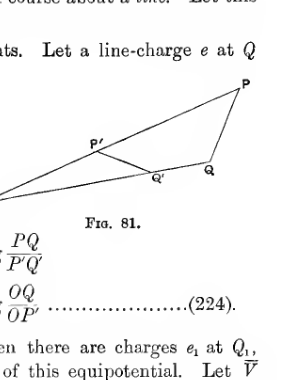
Four points lie on rays from an inversion centre \(O\): the outer pair \(P, Q\) and the inner inverse pair \(P', Q'\). The figure illustrates the two-dimensional inversion relation used to compare potentials at \(P\) and \(P'\) under line charges at inverse points.
If we take \(e=e'\), we obtain
Let \(P\) be a point on an equipotential when there are charges \(e_1\) at \(Q_1\), \(e_2\) at \(Q_2\), etc., and let \(\bar{V}\) denote the potential of this equipotential. Let \(\bar{V}'\) denote the potential at \(P'\) under the influence of charges \(e_1, e_2, \ldots\) at the inverse points of \(Q_1, Q_2, \ldots\). Then, by summation of equations such as (224),
or
The potential at \(P'\) of charges \(e_1, e_2, \ldots\) at the inverse points of \(Q_1, Q_2, \ldots\) plus a charge \(-\Sigma e\) at \(O\) is
and this by equation (225) is a constant. This result gives the method of inversion in two dimensions:
If a surface \(S\) is an equipotential under the influence of line-charges \(e_1, e_2, \ldots\) at \(Q_1, Q_2, \ldots\), then the surface which is the inverse of \(S\) about a line \(O\) will be an equipotential under the influence of line-charges \(e_1, e_2, \ldots\) on the lines inverse to \(Q_1, Q_2, \ldots\) together with a charge \(-\Sigma e\) at the line \(O\).
Two-dimensional Harmonics.#
303. A solution of Laplace’s equation can be obtained which is the analogue in two dimensions of the three-dimensional solution in spherical harmonics.
In two dimensions we have two coordinates, \(r, \theta\), these becoming identical with ordinary two-dimensional polar coordinates. Laplace’s equation becomes
and on assuming the form
in which \(R\) is a function of \(r\) only, and \(\Theta\) a function of \(\theta\) only, we obtain the solution in the form
Thus the “harmonic-functions” in two dimensions are the familiar sine and cosine functions. The functions which correspond to rational integral harmonics are the functions
In \(x, y\) coordinates these are obviously rational integral functions of \(x\) and \(y\) of degree \(n\).
Corresponding to the theorem of § 240, that any function of position on the surface of a sphere can (subject to certain restrictions) be expanded in a series of rational integral harmonics, we have the famous theorem of Fourier, that any function of position on the circumference of a circle can (subject to certain restrictions) be expanded in a series of sines and cosines. In the proof which follows (as also in the proof of § 240), no attempt is made at absolute mathematical rigour: as before, the form of proof given is that which seems best suited to the needs of the student of electrical theory.
Fourier’s Theorem.#
304. The value of any function \(F\) of position on the circumference of a circle can be expressed, at every point of the circumference at which the function is continuous, as a series of sines and cosines, provided the function is single-valued, and has only a finite number of discontinuities and of maxima and minima on the circumference of the circle.
Let \(P(f, \alpha)\) be any point outside the circle, then if \(R\) is the distance from \(P\) to the element \(ds\) of the circle \((a, \theta)\), we have
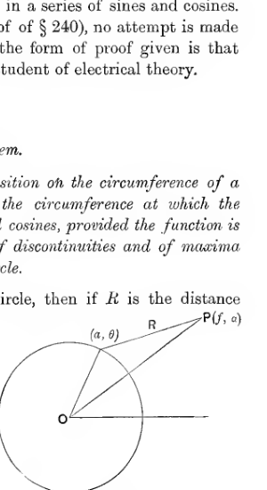
A circle centred at \(O\) is cut by a radius to the boundary point \((a, \theta)\), while an exterior point \(P(f, \alpha)\) is joined both to \(O\) and to the boundary point. The segment \(R\) marks the distance from the exterior point to the element of arc used in Fourier’s integral representation.
This result can easily be obtained by integration, or can be seen at once from physical considerations, for the integrand is the charge induced on a conducting cylinder by unit line-charge at \(P\).
Let us now introduce a function \(u\) defined by
Then, subject to the conditions stated for \(F\) we find, as in § 240, that on the circumference of the circle, the function \(u\) becomes identical with \(F\). Also we have
Hence
and on passing to the limit and putting \(f=a\), this becomes
expressing \(F\) as a series of sines and cosines of multiples of \(\alpha\).
We can put this result in the form
where
and
so that \(\bar{F}\) is the mean value of \(F\).
If \(F\) has a discontinuity at any point \(\theta=\beta\) of the circle, and if \(F_1, F_2\) are the values of \(F\) at the discontinuity, then obviously at the point \(\theta=\beta\) on the circle, equation (226) becomes
so that the value of the series (227) at a discontinuity is the arithmetic mean of the two values of \(F\) at the discontinuity (cf. § 256).
305. We could go on to develop the theory of ellipsoidal harmonics etc. in two dimensions, but all such theories are simply particular cases of a very general theory which will now be explained.
Conjugate Functions.#
General Theory.#
306. In two-dimensional problems, the equation to be satisfied by the potential is
and this has a general solution in finite terms, namely
where \(f\) and \(F\) are arbitrary functions, in which the coefficients may of course involve the imaginary \(i\).
For \(V\) to be wholly real, \(F\) must be the function obtained from \(f\) on changing \(i\) into \(-i\). Let \(f(x+iy)\) be equal to \(u+iv\) where \(u\) and \(v\) are real, then \(F(x-iy)\) must be equal to \(u-iv\), so that we must have \(V = 2u\). If we introduce a second function \(U\) equal to \(-2v\), we have
where \(\phi(x+iy)\) is a completely general function of the single variable \(x+iy\).
Thus the most general form of the potential which is wholly real, can be derived from the most general arbitrary function of the single variable \(x+iy\), on taking the potential to be the imaginary part of this function.
307. If \(\phi(x+iy)\) is a function of \(x+iy\), then \(i\phi(x+iy)\) will also be a function, and the imaginary part of this function will also give a possible potential. We have, however, from equation (230),
shewing that \(U\) is a possible potential.
Thus when we have a relation of the type expressed by equation (230), either \(U\) or \(V\) will be a possible potential.
308. Taking \(V\) to be the potential, we have by differentiation of equation (230),
and hence
Equating real and imaginary parts in the above equation, we obtain
so that
This however is the condition that the families of curves \(U = \text{cons.}, V = \text{cons.}\), should cut orthogonally at every point. Thus the curves \(U = \text{cons.}\) are the orthogonal trajectories of the equipotentials, i.e. are the lines of force.
Representation of complex quantities.#
309. If we write
so that \(z\) is a complex quantity, we can suppose the position of the point \(P\) indicated by the value of the single complex variable \(z\). If \(z\) is expressed in Demoivre’s form
then we find that \(r = \sqrt{x^2+y^2}\) and \(\theta = \tan^{-1}\frac{y}{x}\). The quantity \(r\) is known as the modulus of \(z\) and is denoted by \(|z|\), while \(\theta\) is known as the argument of \(z\) and is denoted by \(\arg z\). The representation of a complex quantity in a plane in this way is known as an Argand diagram.
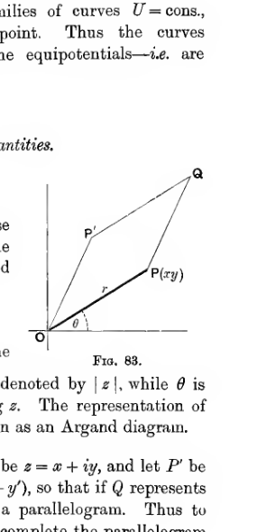
An Argand diagram is drawn with horizontal and vertical axes through the origin \(O\). A vector \(OP\) of length \(r\) makes an angle \(\theta\) with the horizontal axis, and a second polygonal path reaches a point \(Q\), illustrating the geometric representation of the complex number \(z=x+iy\).
310. Addition of complex quantities. Let \(P\) be \(z = x+iy\), and let \(P'\) be \(z' = x'+iy'\). The value of \(z+z'\) is \((x+x') + i(y+y')\), so that if \(Q\) represents the value of \(z+z'\) it is clear that \(OPQP'\) will be a parallelogram. Thus to add together the complex quantities \(z\) and \(z'\) we complete the parallelogram \(OPP'Q\), and the fourth point of this parallelogram will represent \(z+z'\).
The matter may be put more simply by supposing the complex quantity \(z = x+iy\) represented by the direction and length of a line, such that its projections on two rectangular axes are \(x, y\). For instance in fig. 83, the value of \(z\) will be represented equally by either \(OP\) or \(PQ\). We now have the following rule for the addition of complex quantities.
To find \(z+z'\), describe a path from the origin representing \(z\) in magnitude and direction, and from the extremity of this describe a path representing \(z'\). The line joining the origin to the extremity of this second path will represent \(z+z'\).
311. Multiplication of complex quantities. If
and
then, by multiplication
so that
and clearly we can extend this result to any number of factors. Thus we have the important rules:
The modulus of a product is the product of the moduli of the factors.
The argument of a product is the sum of the arguments of the factors.
There is a geometrical interpretation of multiplication.
In fig. 84, let \(OA = 1\), \(OP = z\), \(OP' = z'\) and \(OQ = zz'\). Then the angles \(QOA, P'OA\) being equal to \(\theta+\theta'\) and \(\theta'\) respectively, the angle \(QOP'\) must be equal to \(\theta\), and therefore to \(POA\).
Moreover
each ratio being equal to \(r\), so that the triangles \(QOP'\) and \(POA\) are similar. Thus to multiply the vector \(OP'\) by the vector \(OP\), we simply construct on \(OP'\) a triangle similar to \(AOP\).
The same result can be more shortly expressed by saying that to multiply \(z'(=OP')\) by \(z(=OP)\), we multiply the length \(OP'\) by \(|z|\) and turn it through an angle \(\arg z\).
So also to divide by \(z\), we divide the length of the line representing the dividend by \(|z|\) and turn it through an angle \(-\arg z\). In either case an angle is positive when the turning is in the direction which brings us from the axis \(x\) to that of \(y\) after an angle \(\pi/2\).
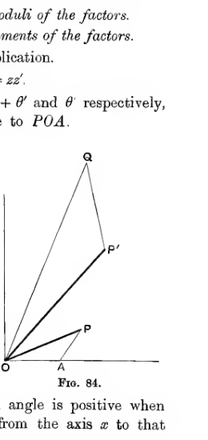
Three rays from the origin \(O\) terminate at points \(P\), \(P'\), and \(Q\), with a unit point \(A\) marked on the horizontal axis. The construction shows multiplication of complex quantities by forming a triangle on \(OP'\) similar to the triangle built on the unit segment and the vector \(OP\).
Conformal Representation.#
312. We can now consider more fully the meaning of the relation
Let us write \(z=x+iy\), and \(W=U+iV\), \(z\) and \(W\) being complex imaginaries, which we must now suppose in accordance with equation (230) to be connected by the relation
We can represent values of \(z\) in one Argand diagram, and values of \(W\) in another. The plane in which values of \(z\) are represented will be called the \(z\)-plane, the other will be called the \(W\)-plane. Any point \(P\) in the \(z\)-plane corresponds to a definite value of \(z\) and this, by equation (232), may give one or more values of \(W\), according as \(\phi\) is or is not a single-valued function. If \(Q\) is a point in the \(W\)-plane which represents one of these values of \(W\), the points \(P\) and \(Q\) are said to correspond.
As \(P\) describes any curve \(S\) in the \(z\)-plane, the point \(Q\) in the \(W\)-plane which corresponds to \(P\) will describe some curve \(T\) in the \(W\)-plane, and the curve \(T\) is said to correspond to the curve \(S\). In particular, corresponding to any infinitesimal linear path \(PP'\) in the \(z\)-plane, there will correspond a small linear element \(QQ'\) in the \(W\)-plane. If \(OP, OP'\) represent the values of \(z, z+dz\) respectively, then the element \(PP'\) will represent \(dz\). Similarly the element \(QQ'\) will represent \(dW\) or \(\frac{dW}{dz}dz\).
Hence we can get the element \(QQ'\) from the element \(PP'\) on multiplying it by \(\frac{dW}{dz}\), i.e. by \(\frac{\partial}{\partial z}\phi(z)\), or by \(\phi'(x+iy)\). This multiplier depends solely on the position of the point \(P\) in the \(z\)-plane, and not on the length or direction of the element \(dz\). If we express \(\frac{dW}{dz}\) or \(\phi'(x+iy)\) in the form
we find that the element \(dW\) can be obtained from the corresponding element \(dz\) by multiplying its length by \(\rho\) or \(\left|\frac{dW}{dz}\right|\), and turning it through an angle \(\chi\), or \(\arg \left(\frac{dW}{dz}\right)\). It follows that any element of area in the \(z\)-plane is represented in the \(W\)-plane by an element of area of which the shape is exactly similar to that of the original element, the linear dimensions are \(\rho\) times as great, and the orientation is obtained by turning the original element through an angle \(\chi\).
From the circumstance that the shapes of two corresponding elements in the two planes are the same, the process of passing from one plane to the other is known as conformal representation.
313. Let us examine the value of the quantity \(\rho\) which, as we have seen, measures the linear magnification produced in a small area on passing from the \(z\)-plane to the \(W\)-plane.
We have
so that
The quantity \(\rho\), or \(\left|\frac{dW}{dz}\right|\), is called the “modulus of transformation.” We now see that if \(V\) is the potential, this modulus measures the electric intensity \(R\), or \(\sqrt{\left(\frac{\partial V}{\partial x}\right)^2 + \left(\frac{\partial V}{\partial y}\right)^2}\). Since \(R=4\pi\sigma\), this circumstance provides a simple means of finding \(\sigma\), the surface-density of electricity at any point of a conducting surface.
314. If \(\frac{\partial}{\partial s}\) denote differentiation along the surface of a conductor, on which the potential \(V\) is constant, we have
so that
The total charge on a strip of unit width between any two points \(P, Q\) of the conductor is accordingly
315. If, on equating real and imaginary parts of any transformation of the form
it is found that the curve \(f(x, y)=0\) corresponds to the constant value \(V=C\), then clearly the general value of \(V\) obtained from equation (234) will be a solution of Laplace’s equation subject to the condition of having the constant value \(V=C\) over the boundary \(f(x, y)=0\). It will therefore be the potential in an electrostatic field in which the curve \(f(x, y)=0\) may be taken to be a conductor raised to potential \(C\).
316. From a given transformation it is obviously always possible to deduce the corresponding electrostatic field, but on being given the conductors and potentials in the field, it is by no means always possible to deduce the required transformation. We shall begin by the examination of a few fields which are given by simple known transformations.
Special Transformations.#
I. \(W=z^n\).#
317. Considering the transformation \(W=z^n\), we have
so that \(V=r^n\sin n\theta\). Thus any one of the surfaces \(r^n\sin n\theta = \text{constant}\) may be supposed to be an equipotential, including as a special case
in which the equipotential consists of two planes cutting at an angle \(\frac{\pi}{n}\).
This transformation can be further discussed by assigning particular values to \(n\).
\(n=1\). This gives simply \(V=x\), a uniform field of force.
\(n=2\). This gives \(V=2xy\), so that the equipotentials are rectangular hyperbolic cylinders, including as a special case two planes intersecting at right angles (fig. 85).
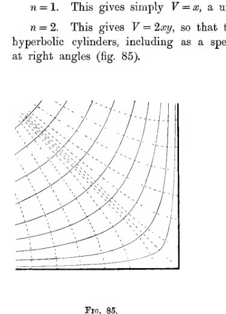
A family of rectangular hyperbolas fills a right-angled corner bounded by two perpendicular conducting planes. Dashed orthogonal curves cross the hyperbolas, showing the field for the transformation \(W=z^2\) near two planes meeting at right angles.
\(n=\tfrac{1}{2}\). This gives \(x+iy=(U+iV)^2\), so that
and on eliminating \(U\) we obtain
Thus the equipotentials are confocal and coaxial parabolic cylinders, including as a special case \((V=0)\) a semi-infinite plane bounded by the line of foci.
This transformation clearly gives the field in the immediate neighbourhood of a conducting sharp straight edge in any field of force (fig. 86).
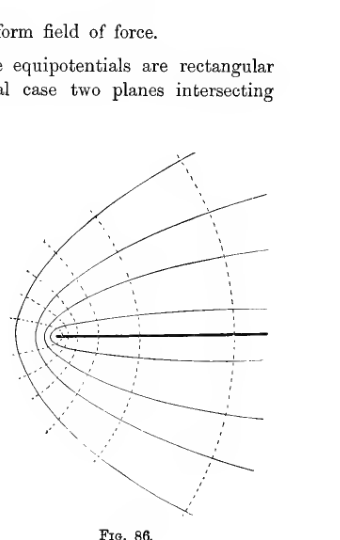
Curves open outward from a sharp edge and are crossed by dashed orthogonal arcs centred near the tip. The diagram shows the parabolic equipotentials and lines of force produced by the transformation \(W=z^{1/2}\) near a conducting edge.
\(n=-1\). This gives
and the equipotentials are
Thus the equipotentials are a series of circular cylinders, all touching the plane \(y=0\) along the axis \(x=0, y=0\) (fig. 87).
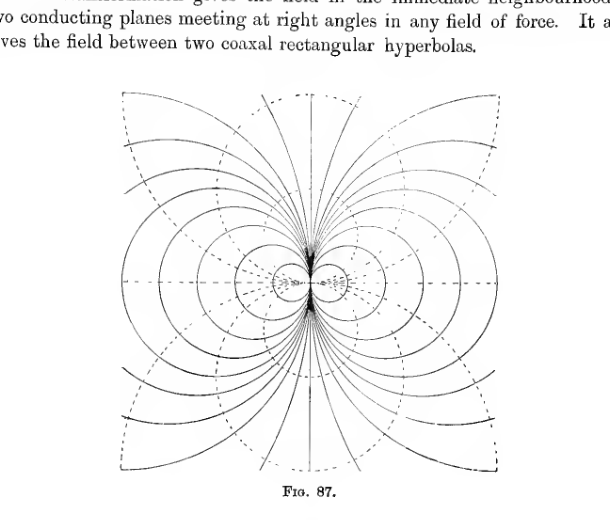
A symmetric pattern of circles and lens-like loops touches a central axis where the field crowds near a contact point. This figure illustrates the circular-cylinder equipotentials generated by the transformation \(W=z^{-1}\), all tangent to the plane \(y=0\) at the origin.
II. \(W=\log z\).#
318. The transformation \(W=\log z\) gives
so that the equipotentials are the planes \(\theta = \text{constant}\), a system of planes all intersecting in the same line. As a special case, we may take \(\theta=0\) and \(\theta=\pi\) to be the conductors, and obtain the field when the two halves of a plane are raised to different potentials. The lines of force, \(U = \text{constant}\), are circles (fig. 88).
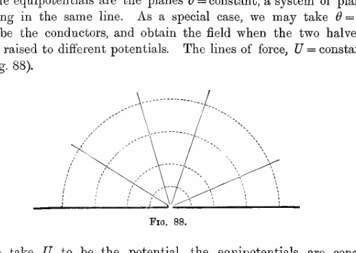
A straight horizontal conductor is intersected at its midpoint by a fan of rays, while dashed semicircles rise above it. The figure represents the field of the transformation \(W=\log z\), where the halves of a plane are at different potentials and the lines of force are circles.
If we take \(U\) to be the potential, the equipotentials are concentric circular cylinders, and the field is seen to be simply that due to a uniform line-charge, or uniformly electrified cylinder.
It may be noticed that the transformation
gives the transformation appropriate to a line-charge at \(z=a\).
Also we notice that
gives a field equivalent to the superposition of the fields given by
This transformation is accordingly that appropriate to two equal and opposite line-charges along the parallel lines \(z=a\) and \(z=-a\).
This last transformation gives \(U=0\) when \(y=0\), so that it gives the transformation for a line-charge in front of a parallel infinite plane.
General Methods.#
I. Unicursal Curves.#
319. Suppose that the coordinates of a point on a conductor can be expressed as real functions of a real parameter, which varies as the point moves over the conductor, in such a way that the whole range of variation of the parameter just corresponds to motion over the whole conductor. In other words, suppose that the coordinates \(x, y\) can be expressed in the form
and that all real values of \(p\) give points on the conductor, while, conversely, all points on the conductor correspond to real values of \(p\).
Then the transformation
will give \(V=0\) over the conductor. For on putting \(V=0\) in equation (235) we obtain
so that
and by hypothesis the elimination of \(U\) will lead to the equation of the conductor.
320. For example, consider the parabola (referred to its focus as origin),
We can write the coordinates of any point on this parabola in the form
and the transformation is seen to be
or
agreeing with that which has already been seen in § 317 to give a parabola as a possible equipotential.
321. As a second example of this method, let us consider the ellipse
The coordinates of a point on the ellipse may be expressed in the form
and the transformation is seen to be
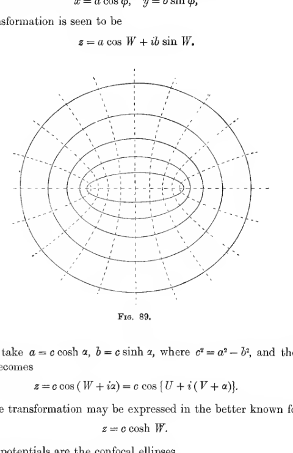
Nested confocal ellipses are crossed by dashed confocal hyperbolas, forming an orthogonal coordinate net around a central oval conductor. The figure shows the field generated by the ellipse transformation, with ellipses as one family and hyperbolic cylinders as the orthogonal family.
We can take \(a=c\cosh \alpha\), \(b=c\sinh \alpha\), where \(c^2=a^2-b^2\), and the transformation becomes
The same transformation may be expressed in the better known form
The equipotentials are the confocal ellipses
while the lines of force are confocal hyperbolic cylinders. On taking \(V\) as the potential, we get a field in which the equipotentials are confocal hyperbolic cylinders.
II. Schwarz’s Transformation.#
322. Schwarz has shewn how to obtain a transformation in which one equipotential can be any linear polygon.
At any angle of a polygon it is clear that the property that small elements remain unchanged in shape can no longer hold. The reason is easily seen to be that the modulus of transformation is either infinite or zero (cf. figs. 24 and 25, p. 61). Thus, at the angles of any polygon,
The same result is evident from electrostatic considerations. At an angle of a conductor, the surface-density \(\sigma\) is either infinite or zero (§ 70), while we have the relation (§ 313),
Let us suppose that the polygon in the \(z\)-plane is to correspond to the line \(V=0\) in the \(W\)-plane, and let the angular points correspond to
Then, when
\(\frac{dz}{dW}\) must either vanish or become infinite. We must accordingly have
where \(\lambda_1, \lambda_2, \ldots\) are numbers which may be positive or negative, while \(F\) denotes a function, at present unknown, of \(W\).
Suppose that, as we move along the polygon, the values of \(U\) at the angular points occur in the order \(u_1, u_2, \ldots\). Then, on passing along the side of the polygon which joins the two angles \(U=u_1, U=u_2\), we pass along a range for which \(V=0\), and \(u_1<U<u_2\). Thus, along this side of the polygon, \(W-u_1, W-u_2, W-u_3\), etc. are real quantities, positive or negative, which retain the same sign along the whole of this edge. It follows that, as we pass along this edge, the change in the value of \(\arg\left(\frac{dz}{dW}\right)\), as given by equation (236), is equal to the change in \(\arg F\), the arguments of the factors
undergoing no change.
Now \(\arg\left(\frac{dz}{dW}\right)\) measures the inclination of the axis \(V=0\) to the edge of the polygon at any point, so that if the polygon is to be rectilinear, this must remain constant as we pass along any edge. It follows that there must be no change in \(\arg F\) as we pass along any side of the polygon.
This condition can be satisfied by supposing \(F\) to be a pure numerical constant. Taking it to be real, we have, from equation (236),
On passing through the angular point at which \(W=u_2\), the quantities \(W-u_1, W-u_3\), etc. remain of the same sign, while the single quantity \(W-u_2\) changes sign. Thus \(\arg (W-u_2)\) increases by \(\pi\), whence, by equation (237), \(\arg\left(\frac{dz}{dW}\right)\) increases by \(\lambda_2\pi\).
The axis \(V=0\) does not turn in the \(W\)-plane on passing through the value \(W=u_2\), while \(\arg\left(\frac{dz}{dW}\right)\) measures the inclination of the element of the polygon in the \(z\)-plane to the corresponding element of the axis \(V=0\) in the \(W\)-plane.
Hence, on passing through the value \(W=u_2\), the perimeter of the polygon in the \(z\)-plane must turn through an angle equal to the increase in \(\arg\left(\frac{dz}{dW}\right)\), namely \(\lambda_2\pi\), the direction of turning being from \(Ox\) to \(Oy\). Thus \(\lambda_1\pi, \lambda_2\pi, \ldots\) must be the exterior angles of the polygon, these being positive when the polygon is convex to the axis \(Ox\). Or, if \(\alpha_1, \alpha_2, \ldots\) are the interior angles, reckoned positive when the polygon is concave to the axis of \(x\), we must have
Thus the transformation required for a polygon having internal angles \(\alpha_1, \alpha_2, \ldots\) is
where \(u_1, u_2, \ldots\) are real quantities, which give the values of \(U\) at the angular points.
323. As an illustration of the use of Schwarz’s transformation, suppose the conducting system to consist of a semi-infinite plane placed parallel to an infinite plane.
In fig. 90, let the conductor be supposed to be a polygon \(ABCDE\), which is described by following the dotted line in the direction of the arrows. The points \(A, B, C\) are all supposed to be at infinity, the points \(B\) and \(C\) coinciding. Let us take \(A\) to be \(W=-\infty\), \(B\) or \(C\) to be \(W=0\), \(D\) to be \(W=1\) and \(E\) to be \(W=+\infty\). The angles of the polygon are zero at \((BC)\) and \(2\pi\) at \(D\). Thus the transformation is
giving upon integration
where \(C, D\) are constants of integration which may be obtained from the condition that the two planes are to be, say, \(y=0\) and \(y=h\). From these conditions we obtain \(C=\frac{h}{\pi}, D=i\pi\), so that the transformation is
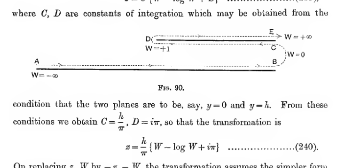
A long horizontal path from \(A\) doubles back around a rounded end near \(B\) and then returns above itself toward \(E\), with arrows marking the traversal and labels showing the corresponding \(W\) values. This polygonal contour is the Schwarz-transform preimage used for the semi-infinite plane parallel to an infinite plane.
On replacing \(z, W\) by \(-z, -W\), the transformation assumes the simpler form
III. Successive Transformations.#
324. If \(\xi=\phi(z), W=f(\xi)\) are any two transformations, then by elimination of \(\xi\), a relation
is obtained, which may be regarded as a new transformation.
We may regard the relation \(\xi=\phi(z)\) as expressing a transformation from the \(z\)-plane into a \(\xi\)-plane, while the second relation \(W=f(\xi)\) expresses a further transformation from the \(\xi\)-plane into a \(W\)-plane. Thus the final transformation (242) may be regarded as the result of two successive transformations.
Two uses of successive transformations are of particular importance.
325. Conductor influenced by line-charge. The transformation
gives, as we have seen (§ 318) the solution when a line-charge is placed at \(\xi=a\) in front of the plane represented by the real axis of \(\xi\). Let the further transformation \(\xi=f(z)\) transform the real axis of \(\xi\) into a surface \(S\), and the point \(\xi=a\) into the point \(z=z_0\), so that \(a=f(z_0)\). Then the transformation
gives the solution when a line-charge is placed at \(z=z_0\) in the presence of the surface \(S\). In this transformation it must be remembered that \(U\), and not \(V\), is the potential (cf. § 318).
326. Conductors at different potentials. Let us suppose that the transformation \(\xi=\phi(z)\) transforms a conductor into the real axis of \(\xi\). The further transformation \(W=C+D\log \xi\) (§ 318) will give the solution when the two parts of this plane on different sides of the origin are raised to different potentials \(C\) and \(C+\pi D\).
Thus the transformation obtained by elimination of \(\xi\), namely
will transform two parts of the same conductor into two parallel planes, and so will give the solution of a problem in which two parts of the same conductor are raised to different potentials.
Examples of the use of Conjugate Functions.#
327. Two examples of practical importance will now be given to illustrate the use of the methods of conjugate functions.
Example I. Parallel Plate Condenser.#
328. The transformation
has been found to transform the two plates in fig. 90 into the positive and negative parts of the real axis of \(\xi\). The further transformation \(W=\log \xi\) gives the solution when these two parts of the real axis of \(\xi\) are at potentials \(0\) and \(\pi\) respectively (§ 326).
Thus the transformation obtained by the elimination of \(\xi\), namely
will transform the two planes of fig. 90, one infinite and one semi-infinite, into two infinite parallel planes. Thus equation (243) gives the transformation suitable to the case of a semi-infinite plane at distance \(h\) from a parallel infinite plane, the potential difference being \(\pi\).
By the principle of images it is obvious that the distribution on the upper plate is the same as it would be if the lower plate were a semi-infinite plane at distance \(2h\) instead of an infinite plane at distance \(h\). The equipotentials and lines of force for either problem are shown in fig. 91.
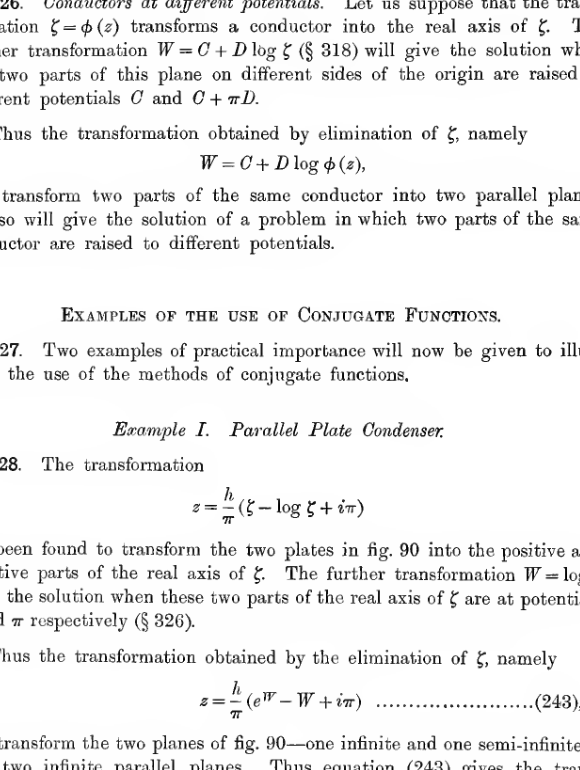
Two vertical plate edges rise from a lower horizontal plate, and a dense family of field lines crowds around the upper edge point \(Q\) before spreading outward in large arcs. The diagram shows the field of a semi-infinite plate facing a parallel plane, with the path \(PQR\) marked along the upper conductor.
Separating real and imaginary parts in equation (243),
Thus the equipotential \(V=0\) is the line \(y=h\), the equipotential \(V=\pi\) is the line \(y=0\).
On the former equipotential, the relation between \(x\) and \(U\) is
When \(U=-\infty\), \(x=+\infty\); as \(U\) increases, \(x\) decreases until it reaches a minimum value \(x=\frac{h}{\pi}\) when \(U=0\); and as \(U\) further increases through positive values \(x\) again increases, reaching \(x=\infty\) when \(U=+\infty\). Thus as \(U\) varies while \(V=0\), the path described is the path \(PQR\) in fig. 91.
The intensity at any point is
At a point on the equipotential \(V=0\), the surface-density is
At \(P\), \(U=-\infty\), so that \(\sigma=\frac{1}{4h}\); as we approach \(Q\), \(\sigma\) increases and finally becomes infinite at \(Q\), while after passing \(Q\) and moving along \(QR\), the upper side of the plate, \(\sigma\) decreases, and ultimately vanishes to the order of \(e^{-U}\).
The total charge within any range \(U_1, U_2\), is, by equation (233),
It therefore appears that the total charge on the upper part of the plate \(QR\) is infinite.
Let us, however, consider the charges on the two sides of a strip of the plate of width \(l\) from \(Q\), i.e. the strip between \(x=\frac{h}{\pi}\) and \(x=l+\frac{h}{\pi}\). The two values of \(U\) corresponding to the points in the upper and lower faces at which this strip terminates, are from equation (244) the two real roots of
Of these roots we know that one, say \(U_1\), is negative and the other (\(U_2\)) is positive. If \(l\) is large, we find that the negative root \(U_1\) is, to a first approximation, equal to
and this is its actual value when \(l\) is very large. Thus the charge on the lower plate within a large distance \(l\) of the edge is
and therefore the disturbance in the distribution of electricity as we approach \(Q\) results in an increase on the charge of the lower plate equal to what would be the charge on a strip of width \(\frac{h}{\pi}\) in the undisturbed state.
If \(l\) is large the positive root of equation (245) is
so that the total charge on a strip of width \(l\) of the upper plate approximates, when \(l\) is large, to
Thus although the charge on the upper plate is infinite, it vanishes in comparison with that on the lower plate.
Example II. Bend of a Leyden Jar.#
329. The method of conjugate functions enables us to approximate to the correction required in the formula for the capacity of a Leyden Jar, on account of the presence of the sharp bend in the plates.
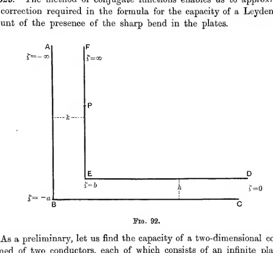
Two L-shaped conducting plates face one another, one inner and one outer, with labelled points \(A\) through \(F\) and spacing markers \(h\) and \(k\). The geometry represents the bent plates of a Leyden-jar edge, fitted one inside the other for the conformal-mapping calculation.
As a preliminary, let us find the capacity of a two-dimensional condenser formed of two conductors, each of which consists of an infinite plate, bent into an L-shape, the two L’s being fitted into one another as in fig. 92.
Let us assume the five points \(A, B, (CD), E, F\) to be \(\xi=-\infty, -a, 0, +b, +\infty\) respectively, and let us for convenience suppose the potential difference which occurs on passing through the value \(\xi=0\) to be \(\pi\). Then the transformation is
where \(W=\log \xi\) (cf. § 326).
To integrate, we put \(u=(\xi+a)^{-\frac{1}{2}}(\xi-b)^{\frac{1}{2}}\), and obtain
where \(C\) is a constant of integration.
To make \(C\) vanish, we must have \(z=0\) when \(u=0\), i.e. at the point \(E\). We shall accordingly take \(E\) as origin, so that \(C=0\).
At \(B\), we now have \(\xi=-a, u=\infty\), and therefore
Thus the distances between the pairs of arms are \(\pi\sqrt{\frac{b}{a}}A\) and \(\pi A\) respectively.
Let \(P\) be any point in \(EF\) which is at a distance from \(E\) great compared with \(EB\). Let the value of \(\xi\) at \(P\) be \(\xi_P\), so that \(\xi_P\) is positive and greater than \(b\).
We have \(W=U+iV=\log \xi\), so that along the conductor \(FED\), \(V=0\) and \(U=\log \xi\).
The total charge per unit width on the strip \(EP\) is, by formula (233),
If \(P\) is far removed from \(E\), the value of \(\xi_P\) is very great, and since
the value of \(u^2\) will be nearly equal to unity at \(P\).
From equation (246),
so that
in which the terms \(\log (1-u^2), -\frac{z}{A}\), are large at \(P\) in comparison with the others. Again, from equation (248), we have
in which \(\log \xi, \log (1-u^2)\) are large at \(P\), in comparison with the term \(\log (au^2+b)\). Combining equations (249) and (250),
in which the terms \(\log \xi\) and \(\frac{z}{A}\) are large at \(P\) in comparison with the other terms. At \(P\) we may put \(u=1\) in all terms except \(\log \xi\) and \(\frac{z}{A}\), and obtain as an approximation
The value of \(z_P\) is of course \(x_P+iy_P\), or \(EP\). Thus, from the equation just obtained, equation (247) may be thrown into the form
If the lines of force were not disturbed by the bend, we should have
Equation (252) shews that \(\int_E^P \sigma\,dS\) is greater than this, by an amount
Let us denote the distances between the plates, namely \(\pi A\sqrt{\frac{b}{a}}\) and \(\pi A\), by \(h\) and \(k\) respectively, so that \(\sqrt{\frac{b}{a}}=\frac{h}{k}\). Expression (253) now becomes
so that the charge on the plate \(EP\) is the same as it would be in a parallel plate condenser in which the breadth of the strip was greater than \(EP\) by
When \(h=k\), this becomes
Multiple-valued Potentials.#
330. There are many problems to which mathematical analysis yields more than one solution, although it may be found that only one of these solutions will ultimately satisfy the actual data of the problem. In such a case it will often be of interest to examine what interpretation has to be given to the rejected solutions.
The problem of determining the potential when the boundary conditions are given is not of this class, for it has already been shewn (§§ 186-188) that, subject to specified boundary conditions, the termination of the potential is absolutely unique. But it may happen that, in searching for the required solution, we come upon a multiple-valued solution of Laplace’s equation. Only one value can satisfy the boundary conditions, but the interpretation of the other values is of interest, and in this way we arrive at the study of multiple-valued potentials.
Conjugate Functions on a Riemann’s Surface.#
331. An obvious case of a multiple-valued potential arises from the conjugate function transformation
when \(\phi\) is not a single-valued function of \(z\). Such cases have already occurred in §§ 317, 320, 323, etc.
The meaning of the multiple-valued potential becomes clear as soon as we construct a Riemann’s surface on which \(\phi(z)\) can be represented as a single-valued function of position. One point on this Riemann’s surface must now correspond to each value of \(W\), and therefore to each point in the \(W\)-plane. Thus we see that the transformation (254) transforms the complete \(W\)-plane into a complete Riemann’s surface. Corresponding to a given value of \(z\) there may be many values of the potential, but these values will refer to the different sheets of the Riemann’s surface. If any region on this surface is selected, which does not contain any branch points or lines, we can regard this region as a real two-dimensional region, and the corresponding value of the potential, as given by equation (254), will give the solution of an electrostatic problem.
332. To illustrate this by a concrete case, consider the transformation
which has already been considered in § 317. The Riemann’s surface appropriate for the representation of the two-valued function \(z^{\frac{1}{2}}\) may be supposed to be a surface of two infinite sheets connected along a branch line which extends over the positive half of the real axis of \(z\).
To regard this surface as a deformation of the \(W\)-plane, we must suppose that a slit is cut along the line \(OB\) (fig. 93) in the \(W\)-plane, and that the two edges of the slit are taken and turned so that the angle \(2\pi\), which they originally enclosed in the \(W\)-plane, is increased to \(4\pi\), after which the edges are again joined together.
The upper sheet of the Riemann’s surface so formed will now represent the upper half of the \(W\)-plane, while the lower sheet will represent the lower half. Two points \(P_1, P_2\) which represent equal and opposite values of \(W\), say \(\pm W_0\), will (by equation (255)) be represented by points at which \(z\) has the same value; they are accordingly the two points on the upper and lower sheet respectively for which \(z\) has the value \(W_0^2\).
A circular path \(pqrs\) surrounding \(O\) in the \(W\)-plane becomes a double circle on the \(z\)-surface, one circle being on the upper sheet and one on the lower, and the path being continuous since it crosses from one sheet to the other each time it meets the branch-line.
A line \(\alpha\beta\) in the upper half of the \(W\)-plane becomes, as we have seen, a parabola \(\alpha\beta\) on the upper sheet of the \(z\)-surface. Similarly a line \(\alpha'\beta'\) in the lower half of the \(W\)-plane will become a parabola \(\alpha'\beta'\) on the lower sheet of the \(z\)-surface. The space outside the parabola \(\alpha\beta\) on the upper sheet of the \(z\)-surface transforms into a space in the \(W\)-plane bounded by the line \(\alpha\beta\) and the line at infinity. Consequently the transformation under consideration gives the solution of the electrostatic problem, in which the field is bounded only by a conducting parabola and the region at infinity. The same is not true of the space inside the parabola \(\alpha\beta\), for this transforms into a space in the \(W\)-plane bounded by both the line \(\alpha\beta\) and the axis \(AOB\). It is now clear that the transformation has no application to problems in which the electrostatic field is the space inside a parabola.
In general it will be seen that two points, which are close to one another on one sheet of the \(z\)-surface, but are on opposite sides of a branch-line, will transform into two points which are not adjacent to one another in the \(W\)-plane, and which therefore correspond to different potentials. Consequently we cannot solve a problem by a transformation which requires a branch-line to be introduced into that part of the Riemann’s surface which represents the electrostatic field.
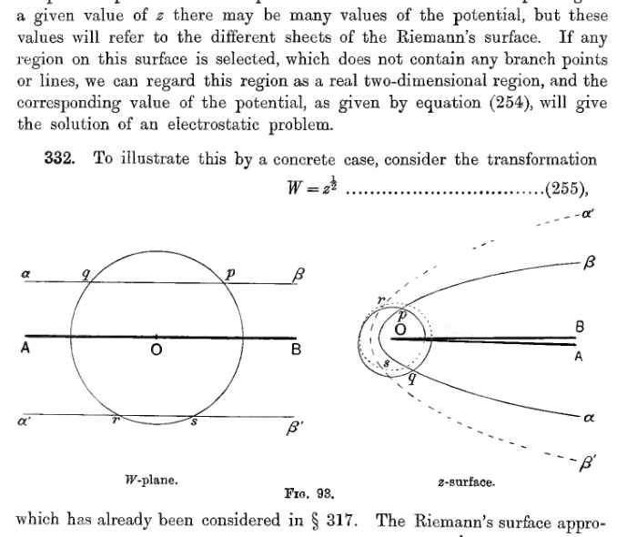
The left diagram shows a slit construction in the \(W\)-plane with a circle cutting labelled lines \(\alpha\beta\) and \(\alpha'\beta'\), while the right diagram shows the corresponding two-sheeted \(z\)-surface wrapped around the branch line \(OB\). The pair illustrates how the transformation \(W=z^{1/2}\) is represented on a Riemann surface.
Images on a Riemann’s Surface.#
333. In the theory of electrical images, a system of imaginary charges is placed in a region which does not form part of the actual electrostatic field. When a two-dimensional problem is solved by a conjugate function transformation, the electrostatic field must, as we have seen, be represented by a region on a single sheet of the corresponding Riemann’s surface, and this region must not be broken by branch-lines. The same, however, is not true of the part of the field in which the imaginary images are placed, for this may be represented by a region on one of the other sheets of the Riemann’s surface.
To take the simplest possible illustration, suppose that in the \(\xi\)-plane we have a line-charge \(e\) along the line represented by the point \(P\), in front of the uninsulated conducting plane represented by the real axis \(AB\). The solution, as we know, is obtained by placing a charge \(-e\) at the point \(P'\), which is the image of \(P\) in \(AOB\). The value of the potential (\(U\)) is given, as in § 318, by
Let us now transform this solution by means of the transformation
The conducting plane \(AOB\) transforms into a semi-infinite plane \(OB\), which may be taken to coincide with the branch-line of the Riemann’s surface. The charge \(e\) at \(P\) becomes a charge at a point \(P\) on the upper sheet of the surface, while the image at \(P'\) becomes a charge at a point \(P'\) on the lower sheet. Thus we can replace the semi-infinite conductor \(OB\) in the \(z\)-plane by an image at a point \(P'\) on the lower sheet of a Riemann’s surface, and we obtain the field due to a line-charge and a semi-infinite conductor in an ordinary two-dimensional space.
From the transformation used, the potential is found to be given by
in which \(U\) is the potential, \(z=a\) is the point \((a, \alpha)\) on the upper sheet, and \(z=-a\) is the image on the lower sheet.
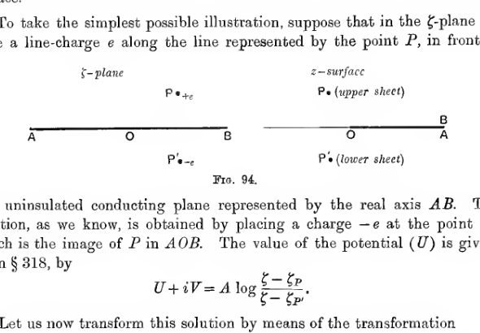
The left sketch shows the ordinary image system for a line charge above a conducting plane, while the right sketch reinterprets the same configuration on upper and lower sheets of a Riemann surface. The lower-sheet point \(P'\) acts as the image for the semi-infinite conductor represented by the branch line.
In calculating a potential on a Riemann’s surface, we must not assume the potential of a line-charge \(e\) at the point \((a, \alpha)\) to be
where \(R\) is the distance from the point \((a, \alpha)\). In fact, this potential would obviously have an infinity both at the point \((a, \alpha)\) on the upper sheet, and also at the point \((a, \alpha)\) on the lower sheet, and \(O\) would be the potential of two line-charges, one at the point \((a, \alpha)\) on each sheet.
The appropriate potential-function for a single charge can easily be found.
As in the problem just discussed, it is clear that the potential due to the single line-charge at \((a, \alpha)\) on the upper sheet is the value of \(U\) given by
so that
and if this is to be the potential due to a line-charge \(e\), it is clear, on examining the value of \(U\) near the point \((a, \alpha)\), that the value of \(A\) must be \(-2e\). Thus the potential function must be
instead of that given by expression (257), namely,
It will be noticed that both expressions are single-valued for given values of \((r, \theta)\), but that for a given value of \(z\), expression (258) has two values, corresponding to two values of \(\theta\) differing by \(2\pi\), while expression (259) has only one value. Or, to state the same thing in other words, the expression (259) is periodic in \(\theta\) with a period \(2\pi\), while expression (258) is periodic with a period \(4\pi\).
Potential in a Riemann’s Space.#
334. Sommerfeld* has extended these ideas so as to provide the solution of problems in three-dimensional space.
His method rests on the determination of a multiple-valued potential function, the function being capable of representation as a single-valued function of position in a “Riemann’s space,” this space being an imaginary space which bears the same relation to real three-dimensional space as a Riemann’s surface bears to a plane.
335. The best introduction to this method will be found in a study of the simplest possible example, and this will be obtained by considering the three-dimensional problem analogous to the two-dimensional problem already discussed in § 333.
We suppose that we have a single point-charge in the presence of an uninsulated conducting semi-infinite plane bounded by a straight edge. Let us take cylindrical coordinates \(r, \theta, z\), taking the edge of the plane to be \(r=0\), the plane itself to be \(\theta=0\), and the plane through the charge at right angles to the edge of the conductor to be \(z=0\). Let the coordinates of the point-charge be \(a, \alpha, 0\).
The Riemann’s space is to be the exact analogue of the Riemann’s surface described in § 332. That is to say, it is to be such that one revolution round the line \(r=0\) takes us from one “sheet” to the other of the space, while two revolutions brings us back to the starting-point. Thus, for a function to be a single-valued function of position in this space, it must be a periodic function of \(\theta\) of period \(4\pi\).
Let us denote by \(f(r, \theta, z, a, \alpha, 0)\) a function of \(r, \theta\), and \(z\) which is to satisfy the following conditions:
it must be a solution of Laplace’s equation ;
it must be a continuous and single-valued function of position in the Riemann’s space ;
it must have one and only one infinity, this being at the point \(a, \alpha, 0\) on the first “sheet” of the space, and the function approximating near the point to the function \(\frac{1}{R}\), where \(R\) is the distance from this point ;
it must vanish when \(r=\infty\).
It can be shown, by a method exactly similar to that used in § 186, that there can be only one function satisfying these conditions. Hence the function \(f(r, \theta, z, a, \alpha, 0)\) can be uniquely determined, and when found it will be the potential in the Riemann’s space of a point-charge of unit strength at the point \(a, \alpha, 0\).
Consider now the function
which is of course the potential of equal and opposite point-charges at the point \(a, \alpha, 0\), and at its image in the plane \(\theta=0\), namely, the point \(a, -\alpha, 0\).
This function, by conditions (i) and (iv), satisfies Laplace’s equation and vanishes at infinity. On the first sheet of the surface, on which \(\alpha\) varies from \(0\) to \(2\pi\) (or from \(4\pi\) to \(6\pi\), etc.), it has only one infinity, namely, at \(a, \alpha, 0\), at which it assumes the value \(\frac{1}{R}\).
From the conditions which it satisfies, the function \(f(r, \theta, z, a, \alpha, 0)\) must clearly involve \(\theta\) and \(\alpha\) only through \(\theta-\alpha\), and must moreover be an even function of \(\theta-\alpha\). It follows that, when \(\theta=0\), expression (260) vanishes.
Again, since the function \(f\) is periodic in \(\theta\) with a period \(2\pi\), it follows that, when \(\theta=-2\pi\), expression (260) may be written in the form
and this clearly vanishes. Thus expression (260) vanishes when \(\theta=0\) and when \(\theta=2\pi\). That is to say, it vanishes on both sides of the semi-infinite conducting plane.
It is now clear that expression (260) satisfies all the conditions which have to be satisfied by the potential. The problem is accordingly reduced to that of the determination of the function \(f(r, \theta, z, a, \alpha, 0)\).
336. Let us write
then the distance \(R\) from \(r, \theta, z\) to \(a, \alpha, 0\) is given by
Take new functions \(R'\) and \(f(u)\) given by
The function \(f(u)\) has infinities when \(u=\alpha, \alpha\pm 2\pi, \alpha\pm 4\pi, \ldots\), its residue being unity at each infinity. Also, when \(u=\alpha\), the value of \(R'\) becomes \(R\). Hence the integral
where the integral is taken round any closed contour in the \(u\)-plane which surrounds the value \(u=\alpha\), but no other of the infinities of \(f(u)\), will have as its value \(2i\pi\times \frac{1}{R}\). We accordingly have
The integral just found gives a form for the potential function in ordinary space which, as we shall now see, can easily be modified so as to give the potential function in the Riemann’s space which we are now considering.
We notice first that \(\frac{1}{R'}\), regarded as a function of \(r, \theta\), and \(z\), is a solution of Laplace’s equation, whatever value \(u\) may have. Hence the integral (261) will be a solution of Laplace’s equation for all values of \(f(u)\), for each term of the integrand will satisfy the equation separately.
If we take
we see that the infinities of \(f(u)\) occur when \(u=\alpha, \alpha\pm 4\pi, \alpha\pm 8\pi\), etc., and the residue at each is unity. Hence, if we take the integral round one infinity only, say \(u=\alpha\), the value of
will become identical with \(\frac{1}{R}\) at the point at which \(R'=0\). Moreover, expression (263) is, as we have seen, a solution of Laplace’s equation: it is seen on inspection to be a single-valued function of position on the Riemann’s surface, and to be periodic in \(\theta\) with period \(4\pi\). Hence it is the potential-function of which we are in search. Thus
The details of the integration can be found in Sommerfeld’s paper. The value of the integral is found to be
where
337. Other systems of coordinates can be treated in the same way, and the construction of other Riemann’s spaces can be made to give the solutions of other problems. The details of these will be found in the papers to which reference has already been made.
References.#
On the Theory of Images and Inversion:
Maxwell. Electricity and Magnetism. Chap. xi.
Thomson and Tait. Natural Philosophy. Vol. ii. §§ 510 et seq.
Thomson, Sir W. (Lord Kelvin). Papers on Electrostatics and Magnetism.
On the Mathematical Theory of Spherical and Zonal Harmonics:
Ferrers. Spherical Harmonics. (Macmillan & Co., 1877.)
Todhunter. The Functions of Laplace, Lamé, and Bessel. (Macmillan & Co., 1875.)
Heine. Theorie der Kugelfunctionen. (Berlin, Reimer, 1878.)
Maxwell. Electricity and Magnetism. Chap. ix.
Thomson and Tait. Natural Philosophy. Chap. i. Appendix B.
Byerly. Fourier’s Series and Spherical Harmonics. (Ginn & Co., Boston, 1893.)
On confocal coordinates, and ellipsoidal and spheroidal harmonics:
Todhunter. The Functions of Laplace, Lamé, and Bessel.
Maxwell. Electricity and Magnetism. Chap. x.
Lamb. Hydrodynamics. Chap. v.
Byerly. Fourier’s Series and Spherical Harmonics.
On Conjugate Functions and Conformal Representation:
Maxwell. Electricity and Magnetism. Chap. xii.
Lamb. Hydrodynamics. (Camb. Univ Press, 1895 and 1906.) Chap. iv.
J. J. Thomson. Recent Researches in Electricity and Magnetism. (Clarendon Press, 1893.) Chap. iii.
Webster. Electricity and Magnetism. Introduction, Chap. iv.
Examples.#
An infinite conducting plane at zero potential is under the influence of a charge of electricity at a point \(O\). Show that the charge on any area of the plane is proportional to the angle it subtends at \(O\).
A charged particle is placed in the space between two uninsulated planes which intersect at right angles. Sketch the sections of the equipotentials made by an imaginary plane through the charged particle, at right angles to the planes.
In question 2, let the particle have a charge \(e\), and be equidistant from the planes. Show that the total charge on a strip, of which one edge is the line of intersection of the planes, and of which the width is equal to the distance of the particle from this line of intersection, is \(-\frac{1}{4}e\).
In question 3, the strip is insulated from the remainder of the planes, these being still to earth, and the particle is removed. Find the potential at the point formerly occupied by the particle, produced by raising the strip to potential \(V\).
If two infinite plane uninsulated conductors meet at an angle of \(60^\circ\), and there is a charge \(e\) at a point equidistant from each, and distant \(r\) from the line of intersection, find the electrification at any point of the planes. Show that at a point in a principal plane through the charged point at a distance \(r\sqrt{3}\) from the line of intersection, the surface-density is
Two small pith balls, each of mass \(m\), are connected by a light insulating rod. The rod is supported by parallel threads, and hangs in a horizontal position in front of an infinite vertical plane at potential zero. If the balls when charged with \(e\) units of electricity are at a distance \(a\) from the plate, equal to half the length of the rod, show that the inclination \(\theta\) of the strings to the vertical is given by
What is the least positive charge that must be given to a spherical conductor, insulated and influenced by an external point-charge \(e\) at distance \(r\) from its centre, in order that the surface density may be everywhere positive?
An uninsulated conducting sphere is under the influence of an external electric charge; find the ratio in which the induced charge is divided between the part of its surface in direct view of the external charge and the remaining part.
A point-charge is brought near to a spherical conductor of radius \(a\) having a charge \(E\). Show that the particle will be repelled by the sphere, unless its distance from the nearest point of its surface is less than \(\frac{1}{2}a\sqrt{\frac{e}{E}}\), approximately.
A hollow conductor has the form of a quarter of a sphere bounded by two perpendicular diametral planes. Find the image of a charge placed at any point inside.
A conducting surface consists of two infinite planes which meet at right angles, and a quarter of a sphere of radius \(a\) fitted into the right angle. If the conductor is at zero potential, and a point-charge \(e\) is symmetrically placed with regard to the planes and the spherical surface at a great distance \(f\) from the centre, show that the charge induced on the spherical portion is approximately \(-5ea^3/rf^3\).
A point-charge is placed in front of an infinite slab of dielectric, bounded by a plane face. The angle between a line of force in the dielectric and the normal to the face of the slab is \(\alpha\); the angle between the same two lines in the immediate neighbourhood of the charge is \(\beta\). Prove that \(\alpha, \beta\) are connected by the relation
An electrified particle is placed in front of an infinitely thick plate of dielectric. Show that the particle is urged towards the plate by a force
where \(d\) is the distance of the point from the plate.
Two dielectrics of inductive capacities \(\kappa_1\) and \(\kappa_2\) are separated by an infinite plane face. Charges \(e_1, e_2\) are placed at points on a line at right angles to the plane, each at a distance \(a\) from the plane. Find the forces on the two charges, and explain why they are unequal.
Two conductors of capacities \(c_1, c_2\) in air are on the same normal to the plane boundary between two dielectrics \(\kappa_1, \kappa_2\), at great distances \(a, b\) from the boundary. They are connected by a thin wire and charged. Prove that the charge is distributed between them approximately in the ratio
A thin plane conducting lamina of any shape and size is under the influence of a fixed electrical distribution on one side of it. If \(\sigma_1\) be the density of the induced charge at a point \(P\) on the side of the lamina facing the fixed distribution, and \(\sigma_2\) that at the corresponding point on the other side, prove that \(\sigma_1-\sigma_2=\sigma_0\), where \(\sigma_0\) is the density at \(P\) of the distribution induced on an infinite plane conductor coinciding with the lamina.
An infinite plate with a hemispherical boss of radius \(a\) is at zero potential under the influence of a point-charge on the axis of the boss distant \(f\) from the plate. Find the surface density at any point of the plate, and show that the charge is attracted towards the plate with a force
A conductor is formed by the outer surfaces of two equal spheres, the angle between their radii at a point of intersection being \(2\pi/\beta\). Show that the capacity of the conductor so formed is
where \(a\) is the radius of either sphere.
Within a spherical hollow in a conductor connected to earth, equal point-charges \(e\) are placed at equal distances \(f\) from the centre, on the same diameter. Show that each is acted on by a force equal to
A hollow sphere of sulphur (of inductive capacity 3) whose inner radius is half its outer is introduced into a uniform field of electric force. Prove that the intensity of the field in the hollow will be less than that of the original field in the ratio \(27:34\).
A conducting spherical shell of radius \(a\) is placed, insulated and without charge, in a uniform field of force of intensity \(F\). Shew that if the sphere be cut into two hemispheres by a plane perpendicular to the field, these hemispheres tend to separate and require forces equal to \(\frac{9}{16}a^2F^2\) to keep them together.
An uncharged insulated conductor formed of two equal spheres of radius \(a\) cutting one another at right angles, is placed in a uniform field of force of intensity \(F\), with the line joining the centres parallel to the lines of force. Prove that the charges induced on the two spheres are \(\frac{11}{14}Fa^2\) and \(-\frac{11}{14}Fa^2\).
A conducting plane has a hemispherical boss of radius \(a\), and at a distance \(f\) from the centre of the boss and along its axis there is a point-charge \(e\). If the plane and boss be kept at zero potential, prove that the charge induced on the boss is
A conductor is bounded by the larger portions of two equal spheres of radius \(a\) cutting at an angle \(\frac{1}{3}\pi\), and of a third sphere of radius \(c\) cutting the two former orthogonally. Show that the capacity of the conductor is
A spherical conductor of internal radius \(b\), which is uncharged and insulated, surrounds a spherical conductor of radius \(a\), the distance between their centres being \(c\), which is small. The charge on the inner conductor is \(E\). Find the potential function for points between the conductors, and show that the surface density at a point \(P\) on the inner conductor is
where \(\theta\) is the angle that the radius through \(P\) makes with the line of centres, and terms in \(c^2\) are neglected.
If a particle charged with a quantity \(e\) of electricity be placed at the middle point of the line joining the centres of two equal spherical conductors kept at zero potential, show that the charge induced on each sphere is
neglecting higher powers of \(m\), which is the ratio of the radius to the distance between the centres of the spheres.
Two insulated conducting spheres of radii \(a, b\), the distance \(c\) of whose centres is large compared with \(a\) and \(b\), have charges \(E_1, E_2\) respectively. Show that the potential energy is approximately
Show that the force between two insulated spherical conductors of radius \(a\) placed in an electric field of uniform intensity \(F\) perpendicular to their line of centres is
\(c\) being the distance between their centres.
Two uncharged insulated spheres, radii \(a, b\), are placed in a uniform field of force so that their line of centres is parallel to the lines of force, the distance \(c\) between their centres being great compared with \(a\) and \(b\). Prove that the surface density at the point at which the line of centres cuts the first sphere (\(a\)) is approximately
A conducting sphere of radius \(a\) is embedded in a dielectric (\(K\)) whose outer boundary is a concentric sphere of radius \(2a\). Show that if the system be placed in a uniform field of force \(F\), equal quantities of positive and negative electricity are separated of amount
A sphere of glass of radius \(a\) is held in air with its centre at a distance \(c\) from a point at which there is a positive charge \(e\). Prove that the attraction is
where \(\beta=(K-1)/(K+1)\).
A conducting spherical shell of radius \(a\) is placed, insulated and without charge, in a uniform field of force of intensity \(F\). Shew that if the sphere be cut into two hemispheres by a plane perpendicular to the field, a force \(\frac{9}{16}a^2F^2\) is required to prevent the hemispheres from separating.
A spherical shell, of radii \(a, b\) and inductive capacity \(K\), is placed in a uniform field of force \(F\). Show that the force inside the shell is uniform and equal to
The surface of a conductor being one of revolution whose equation is
where \(r, r'\) are the distances of any point from two fixed points at distance 8 apart, find the electric density at either vertex when the conductor has a given charge.
The curve
when rotated round the axis of \(x\) generates a single closed surface, which is made the bounding surface of a conductor. Shew that its capacity will be \(a\), and that the surface density at the end of the axis will be \(e/3\pi a^2\), where \(e\) is the total charge.
Two equal spheres each of radius \(a\) are in contact. Shew that the capacity of the conductor so formed is \(2a\log_e 2\).
Two spheres of radii \(a, b\) are in contact, \(a\) being large compared with \(b\). Show that if the conductor so formed is raised to potential \(V\), the charges on the two spheres are
A conducting sphere of radius \(a\) is in contact with an infinite conducting plane. Shew that if a unit point-charge be placed beyond the sphere and on the diameter through the point of contact at distance \(c\) from that point, the charges induced on the plane and sphere are
Prove that if the centres of two equal uninsulated spherical conductors of radius \(a\) be at a distance \(2\sigma\) apart, the charge induced on each by a unit charge at a point midway between them is
where \(\sigma=a\cosh \alpha\).
Shew that the capacity of a spherical conductor of radius \(a\), with its centre at a distance \(c\) from an infinite conducting plane, is
where \(c=a\cosh \alpha\).
An insulated conducting sphere of radius \(a\) is placed midway between two parallel infinite uninsulated planes a great distance \(2c\) apart. Neglecting \(\left(\frac{a}{c}\right)^2\), shew that the capacity of the sphere is approximately
Two spheres of radii \(r_1, r_2\) touch each other, and their capacities in this position are \(c_1, c_2\). Shew that
where
A conducting sphere of radius \(a\) is placed in air, with its centre at a distance \(e\) from the plane face of an infinite dielectric. Shew that its capacity is
where \(\alpha=c/a\).
A point-charge \(e\) is placed between two parallel uninsulated infinite conducting planes, at distances \(a\) and \(b\) from them respectively. Shew that the potential at a point between the planes which is at a distance \(z\) from the charge and is on the line through the charge perpendicular to the planes is
A spherical conductor of radius \(a\) is surrounded by a uniform dielectric \(K\), which is bounded by a sphere of radius \(b\) having its centre at a small distance \(\gamma\) from the centre of the conductor. Prove that if the potential of the conductor is \(V\), and there are no other conductors in the field, the surface density at a point where the radius makes an angle \(\theta\) with the line of centres is
A shell of glass of inductive capacity \(K\), which is bounded by concentric spherical surfaces of radii \(a, b\) (\(a<b\)), surrounds an electrified particle with charge \(E\) which is at a point \(Q\) at a small distance \(c\) from \(O\), the centre of the spheres. Shew that the potential at a point \(P\) outside the shell at a distance \(r\) from \(O\) is approximately
where \(\theta\) is the angle which \(QP\) makes with \(OQ\) produced.
If the centres of the two shells of a spherical condenser be separated by a small distance \(d\), prove that the capacity is approximately
A condenser is formed of two spherical conducting sheets, one of radius \(b\) surrounding the other of radius \(a\). The distance between the centres is \(c\), this being so small that \((c/a)^2\) may be neglected. The surface densities on the inner conductor at the extremities of the axis of symmetry of the instrument are \(\sigma_1, \sigma_2\), and the mean surface density over the inner conductor is \(\bar{\sigma}\). Prove that
The equation of the surface of a conductor is \(r=a(1+\epsilon P_n)\), where \(\epsilon\) is very small, and the conductor is placed in a uniform field of force \(F\) parallel to the axis of harmonics. Shew that the surface density of the induced charge at any point is greater than it would be if the surface were perfectly spherical, by the amount
A conductor at potential \(V\) whose surface is of the form \(r=a(1+\epsilon P_n)\) is surrounded by a dielectric (\(K\)) whose boundary is the surface \(r=b(1+\eta P_n)\), and outside this the dielectric is air. Shew that the potential in the air at a distance \(r\) from the origin is
where squares and higher powers of \(\epsilon\) and \(\eta\) are neglected.
The surface of a conductor is nearly spherical, its equation being \(r=a(1+\epsilon S_n)\), where \(\epsilon\) is small. Shew that if the conductor is uninsulated, the charge induced on it by a unit charge at a distance \(f\) from the origin and of angular coordinates \(\theta, \phi\) is approximately
A uniform circular wire of radius \(a\) charged with electricity of line density \(e\) surrounds an uninsulated concentric spherical conductor of radius \(c\); prove that the electrical density at any point of the surface of the conductor is
A dielectric sphere is surrounded by a thin circular wire of larger radius \(b\) carrying a charge \(E\). Prove that the potential within the sphere is
If within a conductor formed by a cone of semi-vertical angle \(\cos^{-1}\mu_0\) and two spherical surfaces \(r=a, r=b\) with centres at the vertex of the cone, a charge \(q\) on the axis at distance \(r'\) from the vertex gives potential \(V\), and if we write
the summation with respect to \(m\) extending to all positive integers, and that with respect to \(n\) to all numbers integral or fractional for which \(P_n(\mu_0)=0\), determine \(A_{mn}\).
A spherical shell of radius \(a\) with a little hole in it is freely electrified to potential \(V\). Prove that the charge on its inner surface is less than \(VS/8\pi a\), where \(S\) is the area of the hole.
A thin spherical conducting shell from which any portions have been removed is freely electrified. Prove that the difference of densities inside and outside at any point is constant.
Electricity is induced on an uninsulated spherical conductor of radius \(a\), by a uniform surface distribution, of density \(\sigma\), over an external concentric non-conducting spherical segment of radius \(c\). Prove that the surface density at the point \(A\) of the conductor at the nearer end of the axis of the segment is
where \(B\) is the point of the segment on its axis, and \(D\) is any point on its edge.
Two conducting discs of radii \(a, a'\) are fixed at right angles to the line which joins their centres, the length of this line being \(r\), large compared with \(a\). If the first have potential \(V\) and the second is uninsulated, prove that the charge on the first is
A spherical conductor of diameter \(a\) is kept at zero potential in the presence of a fine uniform wire, in the form of a circle of radius \(c\) in a tangent plane to the sphere with its centre at the point of contact, which has a charge \(E\) of electricity; prove that the electrical density induced on the sphere at a point whose direction from the centre of the ring makes an angle \(\psi\) with the normal to the plane is
Prove that the capacity of a hemispherical shell of radius \(a\) is
Prove that the capacity of an elliptic plate of small eccentricity \(e\) and area \(A\) is approximately
A circular disc of radius \(a\) is under the influence of a charge \(q\) at a point in its plane at distance \(b\) from the centre of the disc. Show that the density of the induced distribution at a point on the disc is
where \(r, R\) are the distances of the point from the centre of the disc and the charge.
An ellipsoidal conductor differs but little from a sphere. Its volume is equal to that of a sphere of radius \(r\), its axes are \(2r(1+\alpha), 2r(1+\beta), 2r(1+\gamma)\). Show that neglecting cubes of \(\alpha, \beta, \gamma\), its capacity is
A prolate conducting spheroid, semi-axes \(a, b\), has a charge \(E\) of electricity. Show that repulsion between the two halves into which it is divided by its diametral plane is
Determine the value of the force in the case of a sphere.
One face of a condenser is a circular plate of radius \(a\); the other is a segment of a sphere of radius \(R\), \(R\) being so large that the plate is almost flat. Show that the capacity is \(\frac{1}{2}KR\log t_1/t_0\) where \(t_1, t_0\) are the thicknesses of dielectric at the middle and edge of the condenser. Determine also the distribution of the charge.
A thin circular disc of radius \(a\) is electrified with charge \(E\) and surrounded by a spheroidal conductor with charge \(E_1\), placed so that the edge of the disc is the locus of the focus \(S'\) of the generating ellipse. Show that the energy of the system is
\(B\) being an extremity of the polar axis of the spheroid, and \(C\) the centre.
If the two surfaces of a condenser are concentric and coaxial oblate spheroids of small ellipticities \(\epsilon\) and \(\epsilon'\) and polar axes \(2c\) and \(2c'\), prove that the capacity is
neglecting squares of the ellipticities; and find the distribution of electricity on each surface to the same order of approximation.
An accumulator is formed of two confocal prolate spheroids, and the specific inductive capacity of the dielectric is \(Kl/\varpi\), where \(\varpi\) is the distance of any point from the axis. Prove that the capacity of the accumulator is
where \(a, b\) and \(a_1, b_1\) are the semi-axes of the generating ellipses.
A thin spherical bowl is formed by the portion of the sphere \(x^2+y^2+z^2=cz\) bounded by and lying within the cone \(\frac{x^2}{a^2}+\frac{y^2}{b^2}=\frac{z^2}{c^2}\), and is put in connection with the earth by a fine wire. \(O\) is the origin, and \(C\), diametrically opposite to \(O\), is the vertex of the bowl; \(Q\) is any point on the rim, and \(P\) is any point on the great circle arc \(CQ\). Show that the surface density induced at \(P\) by a charge \(E\) placed at \(O\) is
where
Three long thin wires, equally electrified, are placed parallel to each other so that they are cut by a plane perpendicular to them in the angular points of an equilateral triangle of side \(\sqrt{3}c\); show that the polar equation of an equipotential curve drawn on the plane is
the pole being at the centre of the triangle and the initial line passing through one of the wires.
A flat piece of corrugated metal (\(y=a\sin mx\)) is charged with electricity. Find the surface density at any point, and show that it exceeds the average density approximately in the ratio \(my:1\).
A long hollow cylindrical conductor is divided into two parts by a plane through the axis, and the parts are separated by a small interval. If the two parts are kept at potentials \(V_1\) and \(V_2\), prove that any point within the cylinder is at potential
where \(r\) is the distance from the axis, and \(\theta\) is the angle between the plane joining the point to the axis and the plane through the axis normal to the plane of separation.
Show that the capacity per unit length of a telegraph wire of radius \(a\) at a height \(h\) above the surface of the earth is
An electrified line with charge \(e\) per unit length is parallel to a circular cylinder of radius \(a\) and inductive capacity \(K\), the distance of the wire from the centre of the cylinder being \(c\). Show that the force on the wire per unit length is
A cylindrical conductor of infinite length, whose cross-section is the outer boundary of three equal orthogonal circles of radius \(a\), has a charge \(e\) per unit length. Prove that the electric density at distance \(r\) from the axis is
If the cylinder \(r=a+b\cos \theta\) be freely charged, show that in free space the resultant force varies as
and makes with the line \(\theta=0\) an angle
where \(a^2-b^2=2bc\).
If \(\phi+i\psi=f(x+iy)\), and the curves for which \(\phi=\text{constant}\) be closed, shew that the capacity \(C\) of a condenser with boundary surfaces \(\phi=\phi_1, \phi=\phi_0\) is
per unit length, where \([\psi]\) is the increment of \(\psi\) on passing once round a \(\phi\)-curve.
Using the transformation \(x+iy=c\cot \frac{1}{2}(U+iV)\), shew that the capacity \(C\) per unit length of a condenser formed by two right circular cylinders (radii \(a, b\)), one inside the other, with parallel areas at a distance \(d\) apart, is given by
A plane infinite electric grating is made of equal and equidistant parallel thin metal plates, the distance between their successive central lines being \(\pi\), and the breadth of each plate \(2\sin^{-1}(1/K)\). Shew that when the grating is electrified to constant potential, the potential and charge functions \(V, U\) in the surrounding space are given by the equation
Deduce that, when the grating is to earth and is placed in a uniform field of force of unit intensity at right angles to its plane, the charge and potential functions of the portion of the field which penetrates through the grating are expressed by \(U+iV-(x+iy)\), and expand the potential in the latter problem in a Fourier Series.
A cylinder whose cross-section is one branch of a rectangular hyperbola is maintained at zero potential under the influence of a line-charge parallel to its axis and on the concave side. Prove that the image consists of three such line charges, and hence find the density of the induced distribution.
A cylindrical space is bounded by two coaxial and confocal parabolic cylinders, whose latera recta are \(4a\) and \(4b\), and a uniformly electrified line which is parallel to the generators of the cylinder and intersects the axes which pass through the foci in points distant \(c\) from them (\(a>c>b\)). Shew that the potential throughout the space is
where \(r, \theta\) are polar coordinates of a section, the focus being the pole. Determine \(A\) in terms of the electrification per unit length of the line.
An infinitely long elliptic cylinder of inductive capacity \(K\), given by \(\xi=a\) where \(x+iy=c\cosh (\xi+i\eta)\), is in a uniform field \(P\) parallel to the major axis of any section. Shew that the potential at any point inside the cylinder is
Two insulated uncharged circular cylinders outside each other, given by \(\eta=a\) and \(\eta=-\beta\) where \(x+iy=c\tan \frac{1}{2}(\xi+i\eta)\), are placed in a uniform field of force of potential \(Fx\). Shew that the potential due to the distribution on the cylinders is
Two circular cylinders outside each other, given by \(\eta=a\) and \(\eta=-\beta\) where \(x+iy=c\tan \frac{1}{2}(\xi+i\eta)\), are put to earth under the influence of a line-charge \(E\) on the line \(x=0, y=0\). Shew that the potential of the induced charge outside the cylinders is
the summation being taken for all positive integral values of \(n\).
The cross-sections of two infinitely long metallic cylinders are the curves
where \(b>a>c\). If they are kept at potentials \(V_1\) and \(V_2\) respectively, the intervening space being filled with air, prove that the surface densities per unit length of the electricity on the opposed surfaces are
respectively.
What problems are solved by the transformation
where \(a>1\)?
What problem in Electrostatics is solved by the transformation
where \(\psi\) is taken as the potential function, \(\phi\) being the function conjugate to it?
One half of a hyperbolic cylinder is given by \(\eta=\pm \eta_1\), where \(|\eta_1|<\frac{\pi}{2}\), and \(\xi, \eta\) are given in terms of the Cartesian coordinates \(x, y\) of a principal section by the transformation
The half-cylinder is uninsulated and under the influence of a charge of density \(E\) per unit length placed along the line of internal foci. Prove that the surface density at any point of the cylinder is
Verify that, if \(r, s\) be real positive constants, \(z=x+iy\), \(a=\rho e^{i\beta}\), \(\frac{1}{c}=\frac{1}{r}+\frac{1}{s}\), the field of force outside the conductors \(x^2+y^2+2sx=0\), \(x^2+y^2-2rx=0\) due to a doublet at the point \(z=a\), outside both the circles, of strength \(\mu\) and inclination \(\alpha\) to the axis, is given by putting
where \(z=a_0\) is the inverse point to \(z=a\) with regard to either of the circles.
A very thin indefinitely great conducting plane is bounded by a straight edge of indefinite length, and is connected with the earth. A unit charge is placed at a point \(P\). Prove that the potential at any point \(Q\) due to the charge at \(P\) and the electricity induced on the conducting plane is
where \(P'\) is the image of \(P\) in the plane, the cylindrical coordinates of \(Q\) and \(P\) are \((r, \phi, z)\), \((r', \phi', z')\), the straight edge is the axis of \(z\), the angles \(\phi, \phi'\) lie between 0 and \(2\pi\), \(\phi=0\) on the conductor, and
and those values of the inverse functions are taken which lie between \(\frac{1}{2}\pi\) and \(\pi\).
A semi-infinite conducting plane is at zero potential under the influence of an electric charge \(q\) at a point \(Q\) outside it. Shew that the potential at any point \(P\) is given by
where \(r, \theta, z\) are the cylindrical coordinates of the point \(P\), \((r_1, \theta_1, 0)\) of the point \(Q\), \(\theta=0\) is the equation of the conducting plane, and
Hence obtain the potential at any point due to a spherical bowl at constant potential, and shew that the capacity of the bowl is
where \(a\) is the radius of the aperture, and \(a\) is the angle subtended by this radius at the centre of the sphere of which the bowl is a part.
A thin circular conducting disc is connected to earth and is under the influence of a charge \(q\) of electricity at an external point \(P\). The position of any point \(Q\) is denoted by the peri-polar coordinates \(\rho, \theta, \phi\), where \(\rho\) is the logarithm of the ratio of the distances from \(Q\) to the two points \(R, S\) in which a plane \(QRS\) through the axis of the disc cuts its rim, \(\theta\) is the angle \(RQS\), and \(\phi\) is the angle the plane \(QRS\) makes with a fixed plane through the axis of the disc, the coordinate \(\theta\) having values between \(-\pi\) and \(+\pi\), and changing from \(+\pi\) to \(-\pi\) in passing through the disc. Prove or verify that the potential of the charge induced on the disc at any point \(Q(\rho, \theta, \phi)\) is
where \(\rho_0, \theta_0, \phi_0\) are the coordinates of \(P\), \(\theta_0\) being positive, the point \(P'\) is the optical image of \(P\) in the disc, \(a\) is given by the equation
and the smallest values of the inverse functions are to be taken.
Prove that the total charge on the disc is \(-q\theta_0/\pi\).
Explain how to adapt the formula for the potential to the case in which the circular disc is replaced by a spherical bowl with the same rim.
Shew that the potential at any point \(P\) of a circular bowl, electrified to potential \(C\), is
where \(O\) is the centre of the bowl, and \(A, B\) are the points in which a plane through \(P\) and the axis of the bowl cuts the circular rim.
Find the density of electricity at a point on either side of the bowl and shew that the capacity is
where \(a\) is the radius of the sphere, and \(2a\) is the angle subtended at the centre.
Two spheres are charged to potentials \(V_0\) and \(V_1\). The ratio of the distances of any point from the two limiting points of the spheres being denoted by \(e^\eta\) and the angle between them by \(\xi\), prove that the potential at the point \(\xi, \eta\) is
where \(\eta=\alpha, \eta=-\beta\) are the equations of the spheres. Hence find the charge on either sphere.